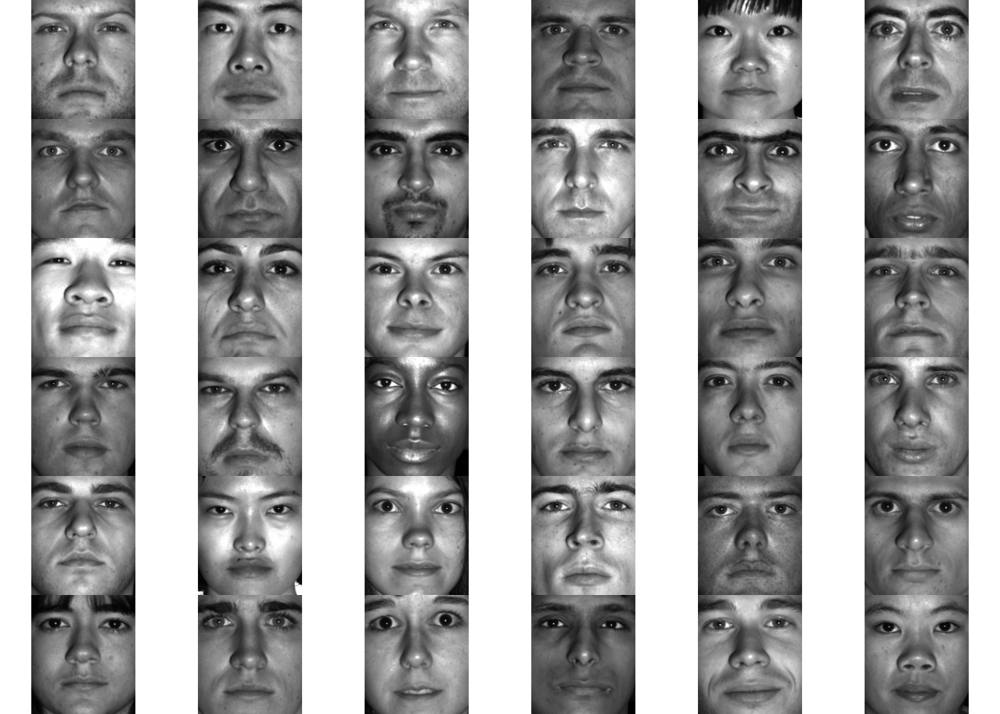
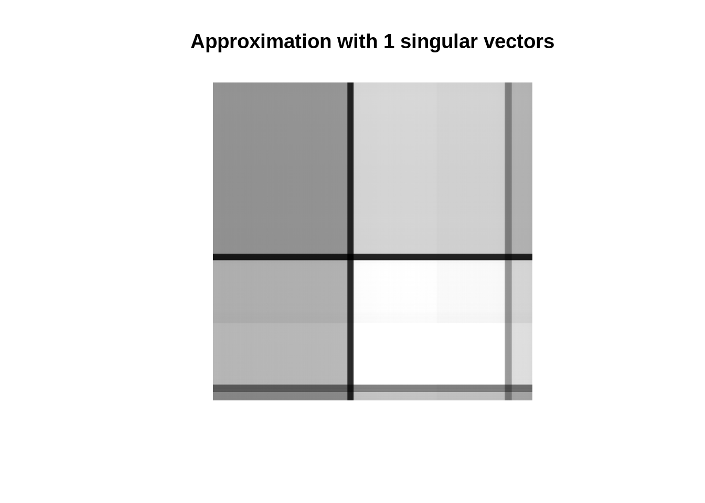
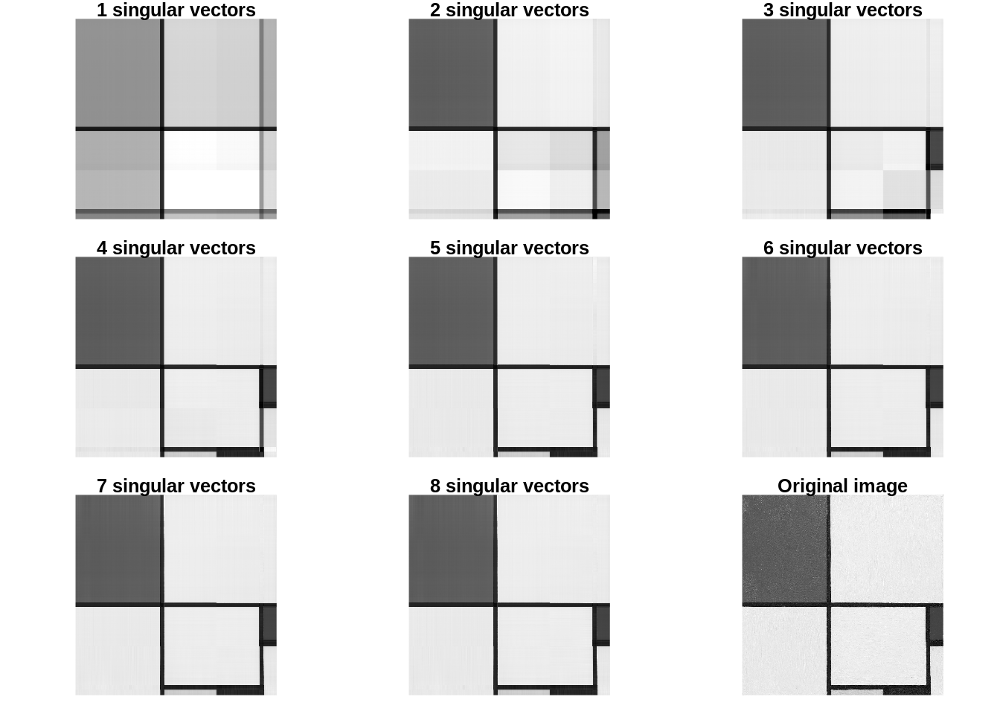
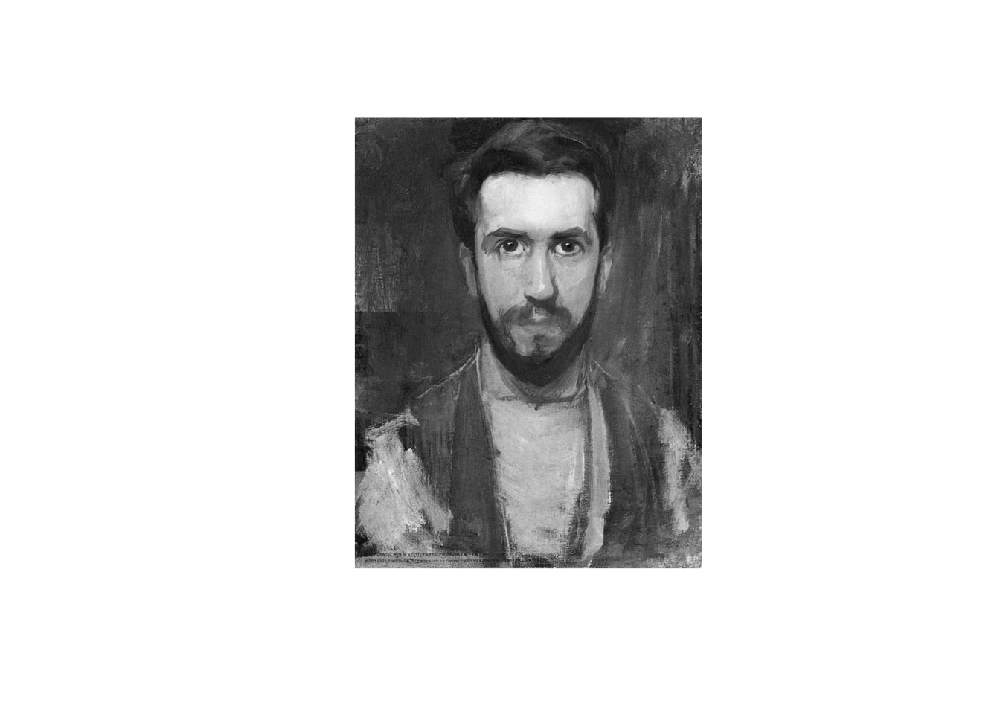
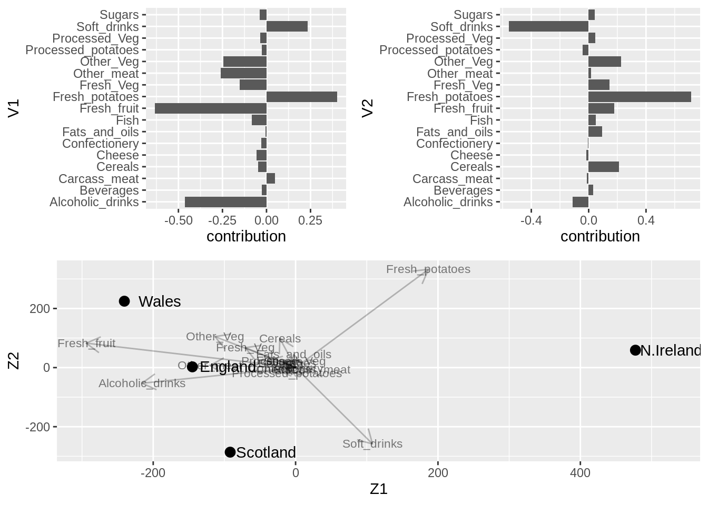

2. Singular Value Decomposition
Lieven Clement
statOmics, Ghent University (https://statomics.github.io)
1 Introduction
1.1 Motivation
The SVD is one of the most well used and general purpose tools from linear algebra for data processing!
Methodologically
- Dimension reduction (e.g. images, gene expression data, movie preferences)
- Used as a first step in many data reduction and machine learning approaches
- Taylor a coordinate system based on the data we have
- Solve system of linear equations for non-square matrices: e.g. linear regression
- Basis for principal component analysis (PCA) and multidimensional scaling (MDS).
- PCA is one of the most widely used methods to study high dimensional data and to understand them in terms of their dominant patterns and correlations
Applications:
- At the heart of search engines: Google
- Basis of many facial recognition methods: e.g. Facebook
- Recommender systems such as Amazon and Netflix
- A standard tool for data exploration and dimension reduction in Genomics
1.2 Disclaimer
When you want to run the script you will have to comment out the eval=FALSE statement in some R chunks. Because the SVD takes a while on the faces example we save the svd for later use. So you have to comment the eval=FALSE statement in this chunk when you run the script for the first time.
1.3 Data
- Extended Yale Face Database B
- Cropped and aligned images of 38 individuals under 64 lighting conditions.
- Each image is 192 pixels tall and 168 pixels wide.
- Each of the facial images in our library will be reshaped into a large vector with 192 × 168 = 32 256 elements.
- We will use the 64 images of 36 people to build our models
library(pixmap)
library(tidyverse)
library(gridExtra)
library(grid)
library(ggmap)
library(downloader)
library(imager)## Download and unzip data
if(!dir.exists("raw-data")) dir.create("raw-data")
download(
"https://github.com/statOmics/HDA2020/raw/data/yalefaces_cropped.zip",
destfile = "raw-data/yalefaces_cropped.zip", mode = "wb", quiet = TRUE
)
unzip ("raw-data/yalefaces_cropped.zip", exdir = "./raw-data")
dir <- "./raw-data/CroppedYale"people <- list.files(dir)
people2 <- sapply(people,
function(x) list.files(
paste0(dir,"/",x),
full.names=TRUE
)
)
facesList <- lapply(people2, function(x) read.pnm(x))
grid.arrange(
grobs=lapply(facesList[1+(0:35)*64],
function(x) getChannels(x) %>%
ggimage(.,coord_equal=TRUE)
),
ncol=6)
1.4 Method
Let \(\mathbf{X}\) be an \(n\times p\) matrix e.g.
- gene expression of \(p=40 000\) genes for \(n=30\) subjects
- n = 100 000 000 webpages indexed with p search terms, or
- \(n\) images each stored as a \(p=32 256\) vector with the intensity of each pixel
Note: the emoji characters will not be visible in the PDF output.
\[X= \left[\begin{array}{ccc} -&\mathbf{x}_{1}^T &- \\ \vdots&\vdots&\vdots\\ -&\mathbf{x}_{i}^T &- \\ \vdots&\vdots&\vdots\\ -&\mathbf{x}_{n}^T &- \\ \end{array}\right]_{n \times p} \begin{array}{c} üíá\\\\ üëÆ\\ \\ üë∏\\ \end{array} \]
The data matrix \(\mathbf{X}\) can be decomposed with the SVD into 3 matrices:
\[ \mathbf{X}=\mathbf{U}_{n\times n}\boldsymbol{\Delta}_{n\times p}\mathbf{V}^T_{p \times p} \]
an orthonormal matrix \(\mathbf{U}_{n\times n}\) with left singular vectors: \(\mathbf{u}_j^T \mathbf{u}_k=1\) if \(k=j\) and \(\mathbf{u}_j^T \mathbf{u}_k=0\) if \(j\neq k\), i.e. \[ \mathbf{U}^T\mathbf{U}=\mathbf{I}\]
a matrix \(\boldsymbol{\Delta}_{n\times p}\) with only singular values: the singular values \(\delta_i\) are the only non-zero elements of the matrix and are on the diagonal element \([\boldsymbol{\Delta}]_{ii}\). They are also organised so that \(\delta_1 > \delta_2 > \ldots > \delta_r\).
an orthonormal matrix \(\mathbf{V}_{p\times p}\) with right singular vectors: \(\mathbf{v}_j^T \mathbf{v}_k=1\) if \(k=j\) and \(\mathbf{v}_j^T \mathbf{v}_k=0\) if \(j\neq k\) otherwise, i.e. \[ \mathbf{V}^T\mathbf{V}=\mathbf{I}\]
Note, that there are only \(r\) non-zero singular values, with \(r\) the rank of matrix \(X\): \(r \leq \text{min}(n,p)\). So we have \(k=1 \ldots r\) non-zero singular values. Hence, we can also rewrite the approximation by restricting us to the rank of matrix \(\mathbf{X}\). Indeed, the n times p matrix \(\boldsymbol\Delta\) only contains \(r\) non-zero diagonal elements!
- So \[ \mathbf{X}=\mathbf{U}_{n\times r}\boldsymbol{\Delta}_{r\times r}\mathbf{V}^T_{p \times r} \]
\[ \left[\begin{array}{ccc} -&\mathbf{x}_{1}^T &- \\ \vdots&\vdots&\vdots\\ -&\mathbf{x}_{i}^T &- \\ \vdots&\vdots&\vdots\\ -&\mathbf{x}_{n}^T &- \\ \end{array}\right]_{n \times p} = \left[\begin{array}{ccc} \mid&&\mid\\ \mathbf{u}_1&\ldots&\mathbf{u}_r\\ \mid&&\mid \end{array}\right]_{n \times r} \left[\begin{array}{ccc} \delta_1\\ &\ddots&\\ &&\delta_r\\ \end{array}\right]_{r \times r} \left[\begin{array}{ccc} \mid&&\mid\\ \mathbf{v}_1&\ldots&\mathbf{v}_r\\ \mid&&\mid\\ \end{array} \right]^T_{p \times r} \]
Also note that \[ \mathbf{V}^T=\left[\begin{array}{ccc} -&\mathbf{v}_{1}^T &- \\ \vdots&\vdots&\vdots\\ -&\mathbf{v}_{r}^T &- \\ \end{array}\right]_{r \times p} \]
For high dimensional data \(p>>>n\) \(\rightarrow\) \(\text{max}(r)=n\) and
equivalently for multivariate data with \(n>p\) \(\rightarrow\) \(\text{max}(r)=p\)
We can also rewrite the decomposition using the properties of matrix multiplication
\[\begin{eqnarray} \mathbf{X} &=& \delta_1\left[ \begin{array}{c} \mid\\ \mathbf{u}_1\\ \mid \end{array} \right] \begin{array}{c} \left[ \begin{array}{ccc} -& \mathbf{v}_1^T& - \end{array} \right]\\\quad\\\quad \end{array} + \ldots + \delta_r\left[ \begin{array}{c} \mid\\ \mathbf{u}_r\\ \mid \end{array} \right] \begin{array}{c} \left[ \begin{array}{ccc} -& \mathbf{v}_r^T& - \end{array} \right]\\\quad\\\quad \end{array}\\ \mathbf{X} &=& \sum_{k=1}^r \delta_k\mathbf{u}_k\mathbf{v}_k^T \end{eqnarray}\]
Because both \(\mathbf{U}\) and \(\mathbf{V}\) are orthonormal all their \(r\) vectors are having unit length and they are thus reshaped by the singular values.
Hence, the singular values determine the importance of the rank one matrices \(\delta_k\mathbf{u}_k\mathbf{v}_k^T\) in the reconstruction of the matrix \(\mathbf{X}\) and they are ordered so that \(\delta_1 > \ldots > \delta_r\).
Note, that for symmetric matrices \(\mathbf{X}\) \(\longrightarrow\) \(\mathbf{U} = \mathbf{V}\).
1.5 Interpretation of singular vectors: face example
1.5.1 Convert images to vectors
- Convert images to vectors and store them as a matrix
- We use an
sapplyloop to loop over all faces - We extract the grey intensities from the pictures
- We convert the matrix in a long skinny vector (
c) - We transpose the resulting matrix from sapply
- We use an
allFacesMx <- sapply(facesList,
function(x)
getChannels(x) %>% c
) %>% t
dim(allFacesMx)## [1] 2432 32256Save memory by removing facesList object
rm(facesList)
gc()Hence we obtain a matrix for n = 2432 images with p = 32256 intensities for each pixel of an image.
Before we do the svd we typically center the data by substracting the average of the columns, i.e. the average face.
We will only work with the first 36 people: \(n = 36 \times 64 = 2304\) pictures.
allFacesCenteredMx <- allFacesMx[1:(36*64),]
meanFace <- colMeans(allFacesCenteredMx)
allFacesMxCentered <- allFacesCenteredMx -
matrix(1, nrow=nrow(allFacesCenteredMx), ncol=1) %*% matrix(meanFace,nrow=1)1.5.2 Visualisation of mean image
plotFaceVector <- function(faceVector,nrow=192,ncol=168) {
matrix(faceVector,nrow=nrow,ncol=ncol) %>%
ggimage()
}
meanFace %>%
plotFaceVector
1.5.3 SVD
1.5.3.1 Perform SVD in R
- We adopt svd on the centered matrix
- We cache the result because the calculation takes 10 minutes.
faceSvd <- svd(allFacesMxCentered)1.5.3.2 SVD
Dimensions of \(\mathbf{U}\), \(\mathbf{V}\)?
n <- nrow(allFacesCenteredMx)
p <- ncol(allFacesCenteredMx)
dim(faceSvd$u)## [1] 2304 2304dim(faceSvd$v)## [1] 32256 2304Indeed, for the face example \(n<p\) so \(r=n\)
Check orthogonality?
We do not do it for all vectors because it takes too long. First left eigen vector and second left eigenvector. Happens in \(\mathbf{U}^T\mathbf{U}\)
t(faceSvd$u[,1])%*%faceSvd$u[,1]## [,1]
## [1,] 1t(faceSvd$u[,1])%*%faceSvd$u[,2]## [,1]
## [1,] -3.794708e-19t(faceSvd$u[,2])%*%faceSvd$u[,2]## [,1]
## [1,] 1So we see that the left eigenvectors are orthonormal.
We check if it also holds for the rows i.e. \(\mathbf{U}\mathbf{U}^T\)
t(faceSvd$u[1,])%*%faceSvd$u[1,]## [,1]
## [1,] 1t(faceSvd$u[2,])%*%faceSvd$u[1,]## [,1]
## [1,] -1.691355e-16t(faceSvd$u[2,])%*%faceSvd$u[2,]## [,1]
## [1,] 1We also see that the rows of \(\mathbf{U}\) are orthonormal.
t(faceSvd$v[,1])%*%faceSvd$v[,1]## [,1]
## [1,] 1t(faceSvd$v[,1])%*%faceSvd$v[,2]## [,1]
## [1,] -9.397551e-16t(faceSvd$v[,2])%*%faceSvd$v[,2]## [,1]
## [1,] 1So we see that the right eigenvectors are orthonormal.
t(faceSvd$v[1,])%*%faceSvd$v[1,]## [,1]
## [1,] 0.6181993t(faceSvd$v[1,])%*%faceSvd$v[2,]## [,1]
## [1,] 0.07690404t(faceSvd$v[2,])%*%faceSvd$v[2,]## [,1]
## [1,] 0.1017995This, however does not hold for the rows of \(\mathbf{V}\). This is because the matrix \(\mathbf{V}\) no longer is a square matrix! \(r=n\) and \(r<p\)!
1.5.3.3 Visualize right eigenvectors \(\mathbf{V}\)
grid.arrange(
grobs=apply(
faceSvd$v[,1:36],
2,
plotFaceVector
)
)## rescaling mat to [0,1]...
## rescaling mat to [0,1]...
## rescaling mat to [0,1]...
## rescaling mat to [0,1]...
## rescaling mat to [0,1]...
## rescaling mat to [0,1]...
## rescaling mat to [0,1]...
## rescaling mat to [0,1]...
## rescaling mat to [0,1]...
## rescaling mat to [0,1]...
## rescaling mat to [0,1]...
## rescaling mat to [0,1]...
## rescaling mat to [0,1]...
## rescaling mat to [0,1]...
## rescaling mat to [0,1]...
## rescaling mat to [0,1]...
## rescaling mat to [0,1]...
## rescaling mat to [0,1]...
## rescaling mat to [0,1]...
## rescaling mat to [0,1]...
## rescaling mat to [0,1]...
## rescaling mat to [0,1]...
## rescaling mat to [0,1]...
## rescaling mat to [0,1]...
## rescaling mat to [0,1]...
## rescaling mat to [0,1]...
## rescaling mat to [0,1]...
## rescaling mat to [0,1]...
## rescaling mat to [0,1]...
## rescaling mat to [0,1]...
## rescaling mat to [0,1]...
## rescaling mat to [0,1]...
## rescaling mat to [0,1]...
## rescaling mat to [0,1]...
## rescaling mat to [0,1]...
## rescaling mat to [0,1]...Hence, the right singular vectors (in \(\mathbf{V}\) of \(\mathbf{X}=\mathbf{U}\boldsymbol{\Delta}\mathbf{V}\)) are also faces and we can thus reconstruct the original faces by linear combinations of the eigen faces.
The first eigen faces are most important to capture overall patterns in the matrix.
Here it are mainly characteristics and shadows that are important for all faces.
From eigen face 5 onwards we start to see specific features.
In this case: \(n < p\), so \(r = n\).
\[ \mathbf{X}_{n\times p}=\mathbf{U}_{n \times n}\boldsymbol{\Delta}_{n\times n}\mathbf{V}_{p\times n}^T \]
\[ \begin{array}{ccccc} \left[\begin{array}{ccc} -&\mathbf{x}_{1}^T &- \\ \vdots&\vdots&\vdots\\ -&\mathbf{x}_{i}^T &- \\ \vdots&\vdots&\vdots\\ -&\mathbf{x}_{n}^T &- \\ \end{array}\right]_{n \times p} \begin{array}{c} üíá\\\\ üëÆ\\ \\ üë∏\\ \end{array} &=& \begin{array}{c} \quad\\ \left[\begin{array}{ccc} \mid&&\mid\\ \mathbf{u}_1&\ldots&\mathbf{u}_n\\ \mid&&\mid \end{array}\right]_{n \times n}\\ \quad \\ \end{array} \begin{array}{c} \quad\\ \left[\begin{array}{ccc} \delta_1\\ &\ddots&\\ &&\delta_n\\ \end{array}\right]_{n \times n}\\ \quad\\ \end{array} \begin{array}{c} \quad \left[\begin{array}{ccc} \mid&&\mid\\ \mathbf{v}_1&\ldots&\mathbf{v}_n\\ \mid&&\mid\\ \end{array} \right]^T_{p \times n}\\ \begin{array}{ccc} üò®&\quad&üòê \end{array} \end{array} \end{array} \]
- Or upon transposing the matrix \(\mathbf{V}\)
\[ \begin{array}{ccccc} \left[\begin{array}{ccc} -&\mathbf{x}_{1}^T &- \\ \vdots&\vdots&\vdots\\ -&\mathbf{x}_{i}^T &- \\ \vdots&\vdots&\vdots\\ -&\mathbf{x}_{n}^T &- \\ \end{array}\right]_{n \times p} \begin{array}{c} üíá\\\\ üëÆ\\ \\ üë∏\\ \end{array} &=& \left[\begin{array}{ccc} \mid&&\mid\\ \mathbf{u}_1&\ldots&\mathbf{u}_n\\ \mid&&\mid \end{array}\right]_{n \times n} \left[\begin{array}{ccc} \delta_1\\ &\ddots&\\ &&\delta_r\\ \end{array}\right]_{n \times n} \left[\begin{array}{ccc} -&\mathbf{v}_{1}^T &- \\ \vdots&\vdots&\vdots\\ -&\mathbf{v}_{p}^T &- \\ \end{array}\right]_{n \times p} \begin{array}{c} üò®\\ \\ üòê \end{array} \end{array} \]
1.5.3.4 Reconstruction of faces via linear combination of eigen faces.
In left singular vectors \(u_{ij}\) we quantify the contribution of the \(j^\text{th}\) eigenface in the reconstruction of face \(i\) and we rescale the importance of each eigen face by its corresponding eigen value \(\delta_j\).
\[ \left[\begin{array}{ccc} -&\mathbf{x}_{1}^T &- \\ \vdots&\vdots&\vdots\\ -&\mathbf{x}_{i}^T &- \\ \vdots&\vdots&\vdots\\ -&\mathbf{x}_{n}^T &- \\ \end{array}\right]_{n \times p} \begin{array}{c} üíá\\\\ üëÆ\\ \\ üë∏\\ \end{array} = \delta_1\left[ \begin{array}{c} \mid\\ \mathbf{u}_1\\ \mid \end{array} \right] \begin{array}{c} \left[ \begin{array}{ccc} -& \mathbf{v}_1^T& - \end{array} \right]\\\quad\\\quad \end{array} \begin{array}{c} üò® \\\quad\\\quad \end{array} + \ldots + \delta_r\left[ \begin{array}{c} \mid\\ \mathbf{u}_r\\ \mid \end{array} \right] \begin{array}{c} \left[ \begin{array}{ccc} -& \mathbf{v}_r^T& - \end{array} \right]\\\quad\\\quad \end{array} \begin{array}{c} üòê \\\quad\\\quad \end{array} \]
If we truncate the eigen faces say at \(k<r\) we can approximate faces using a limited number of eigen faces!
approximateFace <- function(meanFace,faceSvd,k){
reconstruct <- (meanFace + faceSvd$u[1,1:k] %*%
diag(faceSvd$d[1:k]) %*%
t(faceSvd$v[,1:k]) %>%
c)
}
approxHlp <- sapply(
c(25,100,500),
approximateFace,
meanFace=meanFace,
faceSvd=faceSvd)
grid.arrange(
grobs=apply(
cbind(
approxHlp,
allFacesMxCentered[1,]+meanFace
),
2,
plotFaceVector
)
)
approximation with 25 (top left), 100 (top right) and 500 (bottom left) eigenfaces and original face (bottom right, or with all eigenfaces)
2 SVD as a Matrix Approximation Method
We have seen that we can use the truncted SVD to approximate matrix \(\mathbf{X}\) by \(\tilde{\mathbf{X}}\), with \(k<r\) and \[ \tilde{\mathbf{X}}=\mathbf{U}_{n\times k}\boldsymbol{\Delta}_{k\times k}\mathbf{V}_{p \times k}^T \]
It can be shown that SVD: optimal approximation
Let \(\mathbf{X}\) be an \(n\times p\) matrix of rank \(r\leq \min(n,p)\), and let \(\mathbf{A}\) denote an \(n \times p\) matrix of rank \(k\leq r\), with elements denoted by \(a_{ij}\).
The matrix \(\mathbf{A}\) of rank \(k\leq r\) that minimises the Frobenius norm \[ \vert\vert\mathbf{X}-\mathbf{A}\vert\vert^2_\text{fr}=\sum_{i=1}^n\sum_{j=1}^p (x_{ij}-a_{ij})^2 \] is given by the truncated SVD \[ \mathbf{X}_k = \sum_{j=1}^k \delta_j \mathbf{u}_j\mathbf{v}_j^T. \]
The truncated SVD has \(k < r\) terms. Hence, generally \(\mathbf{X}_k\) does not coincide with \(\mathbf{X}\). It is considered as an approximation.
Note, that the truncated SVD thus approximates the matrix by minimising a kind of sum of least squared errors between the elements of matrix \(\mathbf{X}\) and \(\mathbf{A}\) and that
the truncated SVD \(\mathbf{X}_k\) is the best rank-k approximation of \(\mathbf{X}\) in terms of this Frobenius norm.
Also, note that upon truncation \[\mathbf{V}^T_{p\times k} \mathbf{V}_{p\times k} = \mathbf{I}_{k\times k}\] \[\mathbf{U}^T_{n\times k} \mathbf{U}_{n\times k} = \mathbf{I}_{k\times k}\]
But, that \[\mathbf{V}_{p\times k} \mathbf{V}_{p\times k}^T \neq \mathbf{I}_{p\times p}!!!\] \[\mathbf{U}_{n\times k} \mathbf{U}_{n\times k}^T \neq \mathbf{I}_{n\times n}!!!\]
Some informal statement about the truncated SVD \[ \mathbf{X}_k = \sum_{j=1}^k \delta_j \mathbf{u}_j\mathbf{v}_j^T. \]
It can be considered as a weighted sum of matrices \(\mathbf{u}_j\mathbf{v}_j^T\), with weights \(\delta_j\).
The terms are ordered with decreasing weights \(\delta_1\geq \delta_2 \geq \cdots \geq \delta_k >0\).
The matrices \(\mathbf{u}_j\mathbf{v}_j^T\) are of equal “magnitude” (constructed from normalised vectors).
Truncation at \(k\) results in \(k\) \(\delta_j\)’s, \(k\times n\) elements in the \(\mathbf{u}_j\) and \(k \times p\) elements in the \(\mathbf{v}_j\). Hence a total of \(k+kn+kp=k(1+n+p)\) elements (usually much smaller than \(np\)). (Note that restrictions apply to \(\mathbf{u}_j\) and \(\mathbf{v}_j\); hence even less independent elements).
\(\longrightarrow\) data compression
2.1 Example 1: Image compression
2.1.1 Painting Mondriaan: Composition_No.III with red, blue, yellow and black (1929).
- Have a look at this painting of Mondriaan (1872 – 1944), here shown in black-and-white.
2.1.1.1 Load the original painting
- fetch image from the web
- convert into greyscale
- plot
- save as Matrix
mondriaan <- load.image("https://upload.wikimedia.org/wikipedia/commons/thumb/a/ac/Piet_Mondrian_-_Composition_No._III%2C_with_red%2C_blue%2C_yellow_and_black%2C_1929.jpg/1920px-Piet_Mondrian_-_Composition_No._III%2C_with_red%2C_blue%2C_yellow_and_black%2C_1929.jpg")
mondriaan <- grayscale(mondriaan)
plot(mondriaan,axes=FALSE)X <- matrix(as.data.frame(mondriaan)[,3],nrow=nrow(mondriaan),ncol=ncol(mondriaan))This picture can be represented as a \(1920 \times 1913`\) matrix \(\mathbf{X}\) with gray scale intensities \(\in [0,1]\). (\(\approx 4\times 10^6\) data entries)
We will here not transform the image in a vector, but will look at the performance of the SVD to compress this image. The SVD can be applied to any matrix!
2.1.1.2 Singular values
monSvd <- svd(X)
p1 <- data.frame(x=1:length(monSvd$d),y=monSvd$d) %>%
ggplot(aes(x=x,y=y)) +
geom_point() +
xlab("k") +
ylab("singular value")
p2 <- data.frame(x=1:10,y=monSvd$d[1:10]) %>%
ggplot(aes(x=x,y=y)) +
geom_point() +
xlab("k") +
ylab("singular value")
grid.arrange(p1,p2,nrow=1)
- The singular values decay very quickly!
2.1.1.3 Data compression
- We make the plot for a reconstruction with 1 singular vector. This leads to a data compression of \(1-\frac{(1+1920+1913)}{1920\times 1913}\) = 99.9%. We only use 1 left singular vector (1920), 1 eigen value, 1 right singular vector (1913).
k <- 1
approxMon <- monSvd$u[,1:k] %*%
diag(monSvd$d[1:k],ncol=k) %*%
t(monSvd$v[,1:k])
approxMon[approxMon < 0] <- 0
approxMon[approxMon > 1] <- 1
as.cimg(approxMon) %>%
plot(.,main=paste0("Approximation with ",k," singular vectors"),axes=FALSE)
- We make the plot for a reconstruction with 2 singular vector. This leads to a data compression of \(1-\frac{2\times (1+1920+1913)}{1920\times 1913}\) = 99.8%. We only use 2 left singular vectors (2 \(\times\) 1920), 2 singular values, 2 right singular vectors (2 \(\times\) 1913).
k <- 2
approxMon <- monSvd$u[,1:k] %*%
diag(monSvd$d[1:k],ncol=k) %*%
t(monSvd$v[,1:k])
approxMon[approxMon < 0] <- 0
approxMon[approxMon > 1] <- 1
as.cimg(approxMon) %>%
plot(.,main=paste0("Approximation with ",k," singular vectors"),axes=FALSE)
par (mfrow=c(3,3))
par(mar=c(1,2,1,1))
for (k in c(1:8))
{
approxMon <- monSvd$u[,1:k] %*%
diag(monSvd$d[1:k],ncol=k) %*%
t(monSvd$v[,1:k])
approxMon[approxMon < 0] <- 0
approxMon[approxMon > 1] <- 1
approxMon %>%
as.cimg %>%
plot(.,main=paste0(k," singular vectors"),axes=FALSE)
}
plot(as.cimg(X),main=paste0("Original image"),axes=FALSE)
2.1.2 More complex painting: Composition A, Piet Mondriaan
2.1.2.1 Load the original painting
mondriaan <- load.image("https://upload.wikimedia.org/wikipedia/commons/thumb/c/c3/Composition_A_by_Piet_Mondrian_Galleria_Nazionale_d%27Arte_Moderna_e_Contemporanea.jpg/1920px-Composition_A_by_Piet_Mondrian_Galleria_Nazionale_d%27Arte_Moderna_e_Contemporanea.jpg")
mondriaan <- grayscale(mondriaan)
plot(mondriaan,axes=FALSE)
X <- matrix(as.data.frame(mondriaan)[,3],nrow=dim(mondriaan)[1],ncol=dim(mondriaan)[2])2.1.2.2 Singular values
monSvd <- svd(X)p1 <- data.frame(x=1:length(monSvd$d),y=monSvd$d) %>%
ggplot(aes(x=x,y=y)) +
geom_point() +
xlab("k") +
ylab("singular value")
p2 <- data.frame(x=1:10,y=monSvd$d[1:10]) %>%
ggplot(aes(x=x,y=y)) +
geom_point() +
xlab("k") +
ylab("singular value")
grid.arrange(p1,p2,nrow=1)- The singular values decay a bit slower. The painting is a bit more complex. More lines and colors.
2.1.2.3 Evaluate data compression
par (mfrow=c(3,3))
par(mar=c(1,2,1,1))
for (k in c(1,seq(3,21,3)))
{
approxMon <- monSvd$u[,1:k] %*%
diag(monSvd$d[1:k],ncol=k) %*%
t(monSvd$v[,1:k])
approxMon[approxMon < 0] <- 0
approxMon[approxMon > 1] <- 1
approxMon %>%
as.cimg %>%
plot(.,main=paste0(k," singular vectors"),axes=FALSE)
}
plot(as.cimg(X),main=paste0("Original image"),axes=FALSE)
2.1.3 Self portret Piet Mondriaan
2.1.3.1 Load the painting
mondriaan <- load.image("https://upload.wikimedia.org/wikipedia/commons/thumb/6/66/Mondrian_Zelfportret.jpg/1920px-Mondrian_Zelfportret.jpg")
mondriaan <- grayscale(mondriaan)
plot(mondriaan,axes=FALSE)
X <- matrix(as.data.frame(mondriaan)[,3],nrow=dim(mondriaan)[1],ncol=dim(mondriaan)[2])2.1.3.2 Singular values
monSvd <- svd(X)
p1 <- data.frame(x=1:length(monSvd$d),y=monSvd$d) %>%
ggplot(aes(x=x,y=y)) +
geom_point() +
xlab("k") +
ylab("singular value")
p2 <- data.frame(x=1:10,y=monSvd$d[1:10]) %>%
ggplot(aes(x=x,y=y)) +
geom_point() +
xlab("k") +
ylab("singular value")
grid.arrange(p1,p2,nrow=1)
- The singular values decay much slower. The painting is more complex.
2.1.3.3 Evaluate compression
par (mfrow=c(3,3))
par(mar=c(1,2,1,1))
for (k in c(1,5,10,20,30,40,50,100))
{
approxMon <- monSvd$u[,1:k] %*%
diag(monSvd$d[1:k],ncol=k) %*%
t(monSvd$v[,1:k])
approxMon[approxMon < 0] <- 0
approxMon[approxMon > 1] <- 1
approxMon %>%
as.cimg %>%
plot(.,main=paste0(k," singular vectors"),axes=FALSE)
}
plot(as.cimg(X),main=paste0("Original image"),axes=FALSE)
Here we need at least 40 singular vector. This leads to a data compression of \(1-\frac{40\times (1+1920+2494)}{1920 \times 2494}\) = 96.3%. We only use 40 left singular vectors (\(40 \times 1920\)), 40 singular values, 40 right eigens vector (\(40\times 2494\)).
3 Geometric interpretation
Write the truncated SVD as \[ \mathbf{X}_k = \mathbf{U}_k \boldsymbol{\Delta}_k \mathbf{V}_k^T = \mathbf{Z}_k \mathbf{V}_k^T \] with \[ \mathbf{Z}_k = \mathbf{U}_k \boldsymbol{\Delta}_k \] an \(n \times k\) matrix.
Each of the \(n\) rows of \(\mathbf{Z}_k\), say \(\mathbf{z}^T_{k,i}\), represents a point in a \(k\)-dimensional space.
Because of the orthonormality of the singular vectors, we also have \[\begin{eqnarray*} \mathbf{X}_k\mathbf{V}_k &=& \mathbf{Z}_k \mathbf{V}_k^T\mathbf{V}_k \\ \mathbf{X}_k\mathbf{V}_k &=& \mathbf{Z}_k. \end{eqnarray*}\]
Thus the matrix \(\mathbf{V}_k\) is a transformation matrix that may be used to transform \(\mathbf{X}_k\) into \(\mathbf{Z}_k\), and \(\mathbf{Z}_k\) into \(\mathbf{X}_k\).
Note that
The matrix \(\mathbf{V}_k\) transforms the \(p\)-dimensional \(\mathbf{X}_k\) into the \(k\)-dimensional \(\mathbf{Z}_k\): \(\mathbf{Z}_k = \mathbf{X}_k\mathbf{V}_k\). Note, however, that the matrix \(\mathbf{X}_k\) must not necessarily be used for this transformation, because the SVD of the original matrix \(\mathbf{X}\) also gives directly \(\mathbf{Z}_k = \mathbf{U}_k \boldsymbol{\Delta}_k\).
The inverse transformation from the \(k\)-dimensional \(\mathbf{Z}_k\) to the \(p\)-dimensional \(\mathbf{X}_k\) is given by the transpose of \(\mathbf{V}_k\): \(\mathbf{Z}_k \mathbf{V}_k^T=\mathbf{X}_k\). Often inverse transformations are given by the inverse of a matrix, but thanks to the orthonormality of the columns of \(\mathbf{V}_k\), we get \(\mathbf{V}_k^T\mathbf{V}_k=\mathbf{I}\), and thus \(\mathbf{V}_k^T\) acts as an inverse.
The transformation from the \(k\)-dimensional \(\mathbf{Z}_k\) to the \(p\)-dimensional \(\mathbf{X}_k\) is transforming points from a low dimensional space (\(k\)) to a high dimensional space (\(p\)). You may not interpret this as if this transformation adds information; the transformed points in \(\mathbf{X}_k\) still live in a \(k\)-dimensional subspace of the larger \(p\)-dimensional space; the matrix \(\mathbf{X}_k\) is only of rank \(k\) and thus contains less information than the original data matrix \(\mathbf{X}\) (if rank(\(\mathbf{X}\))\(=r>k\)).
More importantly, it can be shown that (thanks to orthonormality of \(\mathbf{V}\)) \[ \mathbf{X}\mathbf{V}_k = \mathbf{Z}_k. \] This follows from (w.l.g. rank(\(\mathbf{X}\))=\(r\)) \[\begin{eqnarray*} \mathbf{X}\mathbf{V}_k &=& \mathbf{UDV}^T\mathbf{V}_k = \mathbf{UD}\begin{pmatrix} \mathbf{v}_1^T \\ \vdots \\ \mathbf{v}_r^T \end{pmatrix} \begin{pmatrix} \mathbf{v}_1 \ldots \mathbf{v}_k \end{pmatrix} \\ &=& \mathbf{UDV}^T\mathbf{V}_k = \mathbf{UD}\begin{pmatrix} 1 & 0 & \ldots & 0 \\ 0 & 1 & \ldots & 0 \\ \vdots & \vdots & \ddots & 0 \\ 0 & 0 & \ldots & 1 \\ 0 & 0 & \ldots & 0 \\ \vdots & \vdots & \vdots & \vdots \\ 0 & 0 & \ldots & 0 \end{pmatrix} \ = \mathbf{U}_k\boldsymbol{\Delta}_k = \mathbf{Z}_k \end{eqnarray*}\]
The \(p \times k\) matrix \(\mathbf{V}_k\) acts as a transformation matrix: transforming \(n\) points in a \(p\) dimensional space to \(n\) points in a \(k\) dimensional space.
We take a closer look at \[ \mathbf{Z}_k = \mathbf{X}\mathbf{V}_k = \begin{pmatrix} \mathbf{x}_1^T \\ \vdots \\ \mathbf{x}_n^T \end{pmatrix} \begin{pmatrix} \mathbf{v}_1 \ldots \mathbf{v}_k \end{pmatrix}. \] The \(i\)th row (observation) in \(\mathbf{Z}_k\) equals \[ \mathbf{z}_{k,i}^T = \mathbf{x}_i^T\mathbf{V}_k = \left(\mathbf{x}_i^T \mathbf{v}_1 , \mathbf{x}_i^T \mathbf{v}_2 , \ldots , \mathbf{x}_i^T \mathbf{v}_k\right). \]
Hence, \(\mathbf{z}_{k,i}^T = \mathbf{x}_i^T\mathbf{V}_k\) is the orthogonal projection of \(\mathbf{x}_i\) onto the \(k\)-dimensional subspace spanned by the columns of \(\mathbf{V}_k\).
SVD transforms data set to lower dimensional data set: The SVD thus gives a transformation of the \(p\) dimensional data to \(k\leq r\) dimensional data: \[ \mathbf{Z}_k = \mathbf{X}\mathbf{V}_k. \] This is essentially a dimension reduction.
Note that,
The transformation from \(p\)-dimensional \(\mathbf{X}\) to \(k\)-dimensional \(\mathbf{Z}_k\) is important. It shows that the \(n\) points in the rows of \(\mathbf{Z}_k\) are the result of projecting the \(n\) points in \(\mathbf{X}\) onto the columns of \(\mathbf{V}_k\) (i.e. the first \(k\) singular vectors of \(\mathbf{X}\)). We say that the space of \(\mathbf{Z}_k\) is spanned by the column of \(\mathbf{V}_k\).
The points (rows) in \(\mathbf{X}\) live in a \(p\)-dimensional space (or rank(\(\mathbf{X}\))\(=r\) if \(r<p\)) and they are thus projected onto a lower dimensional space. This is in contrast to the projection \(\mathbf{X}_k\mathbf{V}_k=\mathbf{Z}_k\), because the points in \(\mathbf{X}_k\) live in a \(k\)-dimensional subspace of \(\mathbf{X}\).
Note that with \(k<r\) there is no unique transformation to transform \(\mathbf{Z}_k\) back to \(\mathbf{X}\). On the previous slide we only established the transformation \(\mathbf{Z}_k \mathbf{V}_k^T=\mathbf{X}_k\). Indeed, starting from \(\mathbf{X}\mathbf{V}_k = \mathbf{Z}_k\), and right-multiplying with \(\mathbf{V}_k^T\) does not give the backtransformation, because \(\mathbf{V}_k\mathbf{V}_k^T\) is not the identity matrix.
4 Interpretation of SVD in terms of correlation matrices
For a matrix \(\mathbf X\) the sample variance covariance matrix estimator is \(p\times p\) matrix
\[\begin{eqnarray} \mathbf{S}&=&\frac{1}{N-1}(\mathbf{X}-\bar{\mathbf{X}})^T (\mathbf{X}-\bar{\mathbf{X}})\\ &=&\frac{1}{N-1}\left[\mathbf{X}^T\mathbf{X} - \bar{\mathbf{X}}^T\bar{\mathbf{X}}\right] \end{eqnarray}\]
So \(\mathbf{X}^T\mathbf{X}\) defines up to a constant the variance covariance matrix of \(\mathbf{X}\)! When the matrix is column centered \(\mathbf{S}=\frac{1}{n-1}\mathbf{X}^T\mathbf{X}\).
The same holds for the rows of \(\mathbf{X}\)! The covariance between the subjects can be estimated as \[\mathbf{S}=\frac{1}{p-1}\mathbf{X}\mathbf{X}^T\] upon row centering.
Note, that \[\begin{eqnarray} \mathbf{X}^T\mathbf{X} &=& \mathbf{V}\boldsymbol{\Delta}\mathbf{U}^T \mathbf{U} \boldsymbol{\Delta} \mathbf{V}^T \\ &=&\mathbf{V}\boldsymbol{\Delta}^2 \mathbf{V}^T \end{eqnarray}\]
If we rewrite the expression \[\begin{eqnarray} \mathbf{X}^T\mathbf{X}\mathbf{V} &=&\mathbf{V}\boldsymbol{\Delta}^2 \mathbf{V}^T\mathbf{V} \mathbf{X}^T\mathbf{X}\mathbf{V}\\ &=&\mathbf{V}\boldsymbol{\Delta}^2 \end{eqnarray}\]
So, if the data are centered, the SVD can be used to perform a spectral decomposition of the sample covariance matrix where the right singular vectors correspond to the eigen vectors of the covariance matrix and the eigenvalues are the squared singular values!
Similarly the left singular values can be used to estimate the covariance matrix of the rows of \(\mathbf{X}\). So in our notation covariance between subjects.
\[\begin{eqnarray} \mathbf{X}\mathbf{X}^T &=&\mathbf{U}\boldsymbol{\Delta}^2 \mathbf{U}^T \end{eqnarray}\]
This link is for instance very useful for recommender systems, i.e. to propose movies based on the subjects with whom you correlate. We will also exploit this when we discuss on PCA.
5 SVD and inverse of a matrix
A linear system of equations with \(n\) equations and \(n\) unknowns \[ \mathbf{A}_{n\times n} \boldsymbol{\beta} = \mathbf{b} \] can be solved by \[ \boldsymbol{\beta} = \mathbf{A}_{n\times n}^{-1} \mathbf{b} \]
A unique solution exists if A is full rank.
Note, that a singular value decomposition of the square matrix \(\mathbf{A}=\mathbf{V}\boldsymbol{\Delta}\mathbf{V}^T\) enables the inverse to be written as
\[ \mathbf{A}^{-1} = \mathbf{V}\boldsymbol{\Delta}^{-1}\mathbf{V}^T \]
indeed \[ \mathbf{A}^{-1} \mathbf{A} = \mathbf{V}\boldsymbol{\Delta}^{-1}\mathbf{V}^T\mathbf{V}\boldsymbol{\Delta}\mathbf{V}^T = \mathbf{I} \]
Note, that the SVD generalizes this to systems of under (n<p, fat short matrices) and over determined systems (n>p tall skinny matrices):
Let \[\begin{eqnarray} \mathbf{A} = \mathbf{U}\boldsymbol{\Delta}\mathbf{V}^T \end{eqnarray}\]
and we want to solve \[\begin{eqnarray} \mathbf{A} \boldsymbol{\beta} &=& \mathbf{b}\\ \mathbf{U}\boldsymbol{\Delta}\mathbf{V}^T \boldsymbol{\beta} &=& \mathbf{b}\\ \mathbf{U}^T\mathbf{U}\boldsymbol{\Delta}\mathbf{V}^T \boldsymbol{\beta} &=& \mathbf{U}^T\mathbf{b}\\ \boldsymbol{\Delta}\mathbf{V}^T \boldsymbol{\beta} &=& \mathbf{U}^T\mathbf{b}\\ \boldsymbol{\Delta}^{-1}\boldsymbol{\Delta}\mathbf{V}^T \boldsymbol{\beta} &=& \boldsymbol{\Delta}^{-1}\mathbf{U}^T\mathbf{b}\\ \mathbf{V}\mathbf{V}^T \boldsymbol{\beta} &=& \mathbf{V}\boldsymbol{\Delta}^{-1}\mathbf{U}^T\mathbf{b}\\ \boldsymbol{\beta} &=& \mathbf{V}\boldsymbol{\Delta}^{-1}\mathbf{U}^T\mathbf{b} \end{eqnarray}\]
Note, that for an overdetermined system \(n>p\) so \(r\leq p\). Generally, \(r=p\) and \(\mathbf{V}\) is thus a square matrix so both \(\mathbf{V}^T\mathbf{V}=\mathbf{I}\) and \(\mathbf{V}\mathbf{V}^T=\mathbf{I}\). However, \(\mathbf{U}^T\mathbf{U}=\mathbf{I}\) but \(\mathbf{U}\mathbf{U}^T\neq\mathbf{I}\) because \(r<n\).
\(\mathbf{A}^\dagger=\mathbf{V}\boldsymbol{\Delta}^{-1}\mathbf{U}^T\) is also referred to as the pseudo inverse and it enables us to solve under and overdetermined systems of equations.
Note, that for
- underdetermined systems there typically does not exist a unique solution
- for overdetermined systems usually there does not exist an exact solution. We will focus on the latter in the next section where we explore the link between linear regression and SVD.
6 Linear regression and SVD
Suppose we have the linear regression problem with \(n>p\):
\[\mathbf{Y}=\mathbf{X}\boldsymbol{\beta} + \boldsymbol{\epsilon}\]
\(\mathbf{X}\) is a tall skinny matrix with \(n >> p\).
We know that \[ \hat{\boldsymbol{\beta}}=\left(\mathbf{X}^T \mathbf{X}\right)^{-1}\mathbf{X}^T\mathbf{Y} \]
If we replace \(\mathbf{X}\) by its SVD
\[\begin{eqnarray} \hat{\boldsymbol{\beta}}&=&\left(\mathbf{V}\boldsymbol{\Delta}^2\mathbf{V}^T\right)^{-1}\mathbf{V}\boldsymbol{\Delta}\mathbf{U}^T\mathbf{Y}\\ \hat{\boldsymbol{\beta}}&=&\mathbf{V}\boldsymbol{\Delta}^{-2}\mathbf{V}^T\mathbf{V}\boldsymbol{\Delta}\mathbf{U}^T\mathbf{Y}\\ \hat{\boldsymbol{\beta}}&=&\mathbf{V}\boldsymbol{\Delta}^{-1}\mathbf{U}^T\mathbf{Y} \end{eqnarray}\]
So the SVD also solves the linear regression problem by using the pseudoinverse! If we now think about the fit:
\[\begin{eqnarray} \hat{\mathbf{Y}}&=&\mathbf{X}\hat{\boldsymbol{\beta}}\\ &=&\mathbf{U}\boldsymbol{\Delta}^{-1}\mathbf{V}^T\mathbf{V}\boldsymbol{\Delta}\mathbf{U}^T\mathbf{Y}\\ &=&\mathbf{U}\mathbf{U}^T\mathbf{Y} \end{eqnarray}\]
For an overdetermined system \(\mathbf{U}\mathbf{U}^T\) is not equal to the unity matrix \(\mathbf{I}\) (for an overdetermined system only \(\mathbf{U}^T\mathbf{U}=\mathbf{I}\) because \(n>r\)).
So \(\hat{\mathbf{Y}}\neq \mathbf{Y}\). Hence, we typically do not have an exact solution.
Note, that \(\mathbf{U}\mathbf{U}^T\) spans the same space as the columns of \(\mathbf{X}\), and will define the same \(p\)-dimensional plane in the \(n\) dimensional space \(\mathcal{R}^n\), e.g. cfr \(\mathbf{X}\left(\mathbf{X}^T\mathbf{X}\right)^{-1}\mathbf{X}^T\). So it projects \(\mathbf{Y}\) in the column space of \(\mathbf{X}\) and the errors will be orthogonal onto this plane.
6.1 Example prostate dataset
6.1.1 Fit with lm
prostate <- read_csv(
"https://raw.githubusercontent.com/GTPB/PSLS20/master/data/prostate.csv",
col_types = cols()
)
lm1 <- lm(lpsa ~ lcavol + lweight + svi, prostate)6.1.2 Fit with SVD
X <- prostate[,c(1:2,5)]
X[,3] <- as.double(X[,3]!="healthy")
X <- cbind(Intercept=1,X)
svdX <- svd(X)
betaSvd <- svdX$v %*% diag(1/svdX$d) %*% t(svdX$u) %*% prostate$lpsa
cbind(lm1$coef,betaSvd)## [,1] [,2]
## (Intercept) -0.2680724 -0.2680724
## lcavol 0.5516386 0.5516386
## lweight 0.5085359 0.5085359
## sviinvasion 0.6661583 0.66615837 SVD and Multi-Dimensional Scaling (MDS)
7.1 Example
In this section we will use a dataset on food consumption in the UK. The data originate from the UKs ‘Department for Environment, Food and Rural Affairs’ (DEFRA), showing the consumption in grams (per person, per week) of 17 different types of foodstuff measured and averaged in the four countries of the United Kingdom in 1997. We would like to explore the data and interpret how the food patterns of the different countries differ.
uk <- read_csv(
"https://raw.githubusercontent.com/statOmics/HDA2020/data/ukFoods.csv",
col_types = cols()
)## New names:
## * `` -> ...1knitr::kable(uk, caption = "The full UK foods data table")| …1 | England | Wales | Scotland | N.Ireland |
|---|---|---|---|---|
| Cheese | 105 | 103 | 103 | 66 |
| Carcass_meat | 245 | 227 | 242 | 267 |
| Other_meat | 685 | 803 | 750 | 586 |
| Fish | 147 | 160 | 122 | 93 |
| Fats_and_oils | 193 | 235 | 184 | 209 |
| Sugars | 156 | 175 | 147 | 139 |
| Fresh_potatoes | 720 | 874 | 566 | 1033 |
| Fresh_Veg | 253 | 265 | 171 | 143 |
| Other_Veg | 488 | 570 | 418 | 355 |
| Processed_potatoes | 198 | 203 | 220 | 187 |
| Processed_Veg | 360 | 365 | 337 | 334 |
| Fresh_fruit | 1102 | 1137 | 957 | 674 |
| Cereals | 1472 | 1582 | 1462 | 1494 |
| Beverages | 57 | 73 | 53 | 47 |
| Soft_drinks | 1374 | 1256 | 1572 | 1506 |
| Alcoholic_drinks | 375 | 475 | 458 | 135 |
| Confectionery | 54 | 64 | 62 | 41 |
Note, that here the matrix is displayed with the p variables in the rows and the n experimental units (countries) in the columns. This is often done for high dimensional data where \(p>>n\) because this makes it easier to look at to the raw data table. Note, that the svd calculates left and right singular vectors so it will also provide the correct solution, we just should look to the other set of singular vectors in order to get to the correct interpretation.
7.2 Motivation
The objective of Multidimensional Scaling (MDS) is to find a low-dimensional representation, say \(k\)-dimensional, of \(n\) data points such that the distances between the \(n\) points in the \(k\)-dimensional space is a good approximation of a given squared distance matrix, say \(\mathbf{D}_X\).
The squared distance matrix \(\mathbf{D}_X\) may be given without knowledge of the original observations (not even the dimensionality), or it may be computed from a given set of \(n\) \(p\)-dimensional data points.
Note that the distances between points in a \(k\)-dimensional subspace coincide with the distances between these points in the larger \(p\)-dimensional space.
Use of MDS:
A high dimensional data matrix \(\mathbf{X}\) is given, and one wants to get a visual representation (in 2 or 3 dimensions) of the observations. In this graph each point represents an observation (row of data matrix). From this graph one wants points close to one another to be similar, and observations far away from one another to be dissimilar. Thus the distances between the \(n\) points in the original \(p\)-dimensional space should be well preserved in the 2 or 3 dimensional space.
In some applications the researcher only has knowledge of the similarity (or dissimilarity) between observations. For example, food products can be evaluated by a taste panel and a dissimilarity matrix can be completed. This dissimilarity matrix shows for each pair of food products their dissimilarity (numerical values provided by taste panel, but not objectively quantified). Given this dissimilarity matrix, a 2 or 3 dimensional graph could be helpful if the distances between the points (food products) in this graph are monotonically related to the dissimilarities provided by the taste panel. Food products close to one another in this graph, taste similarly.
Here we discuss the “metric” MDS, which actually requires the Euclidean distances between observations. However, the method works also well if the matrix \(\mathbf{D}_X\) contains dissimilarities rather than squared Euclidean distances.
In this chapter we assume that the data matrix \(\mathbf{X}\) is column-centered (i.e. each column has mean zero).
Centering can be accomplished by multiplying the original data matrix \(\mathbf{X}\) with the \(n \times n\) \(\mathbf{centering\ matrix}\) \[ \mathbf{H} = \mathbf{I} - \frac{1}{n} \mathbf{1}\mathbf{1}^T , \] in which \(\mathbf{1}\) is an \(n\)-vector with all entries equal to 1. Hence, \(\mathbf{H}\mathbf{X}\) is the column-centered data matrix.
We will assume that \(\mathbf{X}\) is already column-centered, and therefore \(\mathbf{H}\mathbf{X}=\mathbf{X}\).
(Note, that the matrix \(\mathbf{1}\mathbf{1}^T\) is an \(n\times n\) matrix with all entries set to 1. )
We will need the following interesting relationship between the Gram matrix \(\mathbf{X}\mathbf{X}^T\) and the distance matrix.
- For an \(n\times p\) data matrix \(\mathbf{X}\), the matrix \(\mathbf{D}_X\) with squared distances has elements \[ (\mathbf{x}_{i}-\mathbf{x}_{j})^T(\mathbf{x}_{i}-\mathbf{x}_{j}) = \Vert \mathbf{x}_i\Vert^2 - 2 \mathbf{x}^T_i\mathbf{x}_j + \Vert \mathbf{x}_j\Vert.^2 \]
-The \(n\times n\) squared distance matrix can then be written as \[ \mathbf{D}_X = \mathbf{N} - 2\mathbf{X}\mathbf{X}^T + \mathbf{N}^T , \] with \(\mathbf{N}\) the \(n \times n\) matrix with \(i\)th row filled with \(\Vert \mathbf{x}_i\Vert^2\).
Note that the elements of \(\mathbf{N}\) can also be found on the diagonal of \(\mathbf{XX}^T\).
Given the structure of the \(\mathbf{H}\) and \(\mathbf{N}\) matrices, it is easy to verify that \[ -\frac{1}{2}\mathbf{H}\mathbf{D}_X\mathbf{H} = \mathbf{X}\mathbf{X}^T. \] This gives an important relation between the distance matrix and the Gram matrix. We will use the notation \(\mathbf{G}_X = -\frac{1}{2}\mathbf{H}\mathbf{D}_X\mathbf{H}\).
The \(n \times n\) Gram matrix \(\mathbf{X}\mathbf{X}^T\) equals \[ \begin{pmatrix} \mathbf{x}_1^T \\ \vdots \\ \mathbf{x}_n^T \end{pmatrix} \begin{pmatrix} \mathbf{x}_1 \ldots \mathbf{x}_n \end{pmatrix} \] and has thus on its \((i,j)\)th position the inner product \[ \mathbf{x}_i^T\mathbf{x}_j= \Vert \mathbf{x}_i\Vert\Vert \mathbf{x}_j\Vert \cos<\mathbf{x}_i,\mathbf{x}_j> . \]
On the diagonal we find \(\mathbf{x}_i^T\mathbf{x}_i=\Vert \mathbf{x}_i\Vert^2\), the squared norm of the \(i\)th observation.
The relation \(-\frac{1}{2}\mathbf{H}\mathbf{D}_X\mathbf{H} = \mathbf{X}\mathbf{X}^T\) tells us that the distance matrix and the Gram matrix contain the same information. The distances, however, are in most situations easier to interpret.
7.3 Link with the SVD
Note, that we have shown that we can rewrite \(\mathbf{X}\mathbf{X}^T\) using the SVD:
\[ \mathbf{X}\mathbf{X}^T = \mathbf{U}\boldsymbol{\Delta}^2\mathbf{U}^T \]
Because the truncated SVD of \(\mathbf{X}\) minimises the Frobenius norm \(\Vert \mathbf{X}-\mathbf{X}_k\Vert_F^2\), it this has an important consequence:
Let \(\mathbf{D}_X\) denote the \(n \times n\) matrix with the squared Euclidian distances between the \(n\) data points \(\mathbf{x}_i\) in the original \(p\)-dimensional space.
Let \(\mathbf{D}_{Zk}\) denote the \(n \times n\) matrix with the squared Euclidian distances between the \(n\) transformed data points \(\mathbf{z}_{k,i}\) in the reduced \(k\)-dimensional space.
Then, it can be shown that the truncated SVD also minimises \[ \Vert \mathbf{D}_X - \mathbf{D}_{Zk} \Vert_F^2. \]
Or in other words: The n points \(\mathbf{z}_{k,i}\) in the k-dimensional subspace spanned by the columns of \(\mathbf{V}_k\) are the best approximation of the \(n\) original points \(\mathbf{x}_i\) in the original p-dimensional space in the sense that the Euclidean distances between the n original points are best approximated by the Euclidean distances between the n transformed points, among all possible k-dimensional linear subspaces.
If \(\mathbf{X}\) is known, we can readily obtain the k-dimensional projection by the SVD of \(\mathbf{X}\)
If we only know the distance matrix \(\mathbf{D}\)
- We can readily obtain the Gram matrix \[-\frac{1}{2}\mathbf{H}\mathbf{D}_X\mathbf{H} = \mathbf{X}\mathbf{X}^T\]
- The truncated SVD of the squared and symmetric Gram matrix \[\mathbf{U}_k\boldsymbol{\Delta}_k^\prime\mathbf{U}_k^T\]
- from which also can obtain \[\mathbf{Z}_k=\mathbf{U}_k\boldsymbol{\Delta}_k,\] with \(\boldsymbol{\Delta}_k= \mathbf{\Delta}_k^{\prime \frac{1}{2}}\)
7.4 Example
X <- as.matrix(t(uk[,-1]))
n <- nrow(X)
H <- diag(n) - matrix(1/n,nrow=n,ncol=n)
X <- H%*%X
svdUk <- svd(X)
k <- 2
Uk <- svdUk$u[,1:k]
Dk <- diag(svdUk$d[1:k])
Zk <- Uk%*%Dk
rownames(Zk) <- colnames(uk)[-1]
colnames(Zk) <- paste0("Z",1:k)
Zk## Z1 Z2
## England -144.99315 2.532999
## Wales -240.52915 224.646925
## Scotland -91.86934 -286.081786
## N.Ireland 477.39164 58.901862Zk %>%
as.data.frame %>%
ggplot(aes(x=Z1,y=Z2,label=rownames(Zk))) +
geom_point(size = 3) +
geom_text(nudge_x = 50)
The graph suggests that Wales and England are quite similar in terms of food consumption, and North Ireland seem to have a very different food consumption pattern.
Also note that England is close to the origin, meaning that the food consumption pattern is close to the average pattern in the UK.
A few questions remain:
- How well can the 17-dimensional data be represented in a 2-dimensional subspace?
- How can we interpret the distances (differences) between the data points in terms of the original 17 variables?
7.5 The biplot
The biplot is a single 2-dimensional graph which displays the information in both \(\mathbf{Z}_2=\mathbf{U}_2\boldsymbol{\Delta}_2\) and \(\mathbf{V}_2\).
The plot of \(\mathbf{Z}_2\) has been discussed previously (e.g. best approximation of distances).
The name “bi”plot refers to the plotting of two parts of the SVD (\(\mathbf{Z}\) and \(\mathbf{V}\)) in a single graph.
From the geometrical interpretation of the SVD we know that \(\mathbf{Z}_2\) is the orthogonal projection of \(\mathbf{X}\) on \(\mathbf{V}_2\) the basis spanned by the first two singular values. Thus for the \(i^\text{th}\) individual we get \[ \mathbf{z}_{2,i}= \mathbf{x}_i \left[\begin{array}{cc}\mathbf{v}_1&\mathbf{v}_2\end{array}\right] \]
We also know that we can approximate \(\mathbf{X}\) by \(\mathbf{X}_2\) which equals:
\[\begin{align} \mathbf{X}_2 &= \mathbf{Z_2}\mathbf{V}_2^T\\ &= \mathbf{Z_2}\left[\begin{array}{c} \mathbf{v}_1^T\\ \mathbf{v}_2^T\end{array}\right] = \mathbf{Z_2} \left[ \begin{array}{ccc}\tilde{\mathbf{v}}_{2,1} \ldots \tilde{\mathbf{v}}_{2,p}\end{array} \right] \end{align}\]
with \(\mathbf{v}_1\) and \(\mathbf{v}_2\) the first two right singular vector and \(\tilde{\mathbf{v}}_j\) the j\(^\text{th}\) column of the matrix \(\mathbf{V}_2^T\).
- This basically shows us that the orthogonal projection of \(\mathbf{z}_{2,i}\) for subject/experimental unit i on \(\tilde{\mathbf{v}}_{2,j}\) gives us the approximation of the value for j\(^\text{th}\) variable that was observed for the \(i^\text{th}\) experimental unit, i.e. \(x_{2,ij}\). \[x_{2,ij}=\mathbf{z}_{2,i}^T\tilde{\mathbf{v}}_{2,j}\]
7.5.1 UK example
7.5.1.1 Biplot
Vk <- svdUk$v[,1:k]
rownames(Vk) <- uk[[1]]
colnames(Vk) <- colnames(Zk)
scaleFactor <- mean(svdUk$d[1:k])
diyBiplot <- ggplot() +
geom_point(
data=Zk %>% as.data.frame,
aes(x=Z1,y=Z2),
size = 3) +
geom_text(
data=Zk %>% as.data.frame,
aes(x=Z1,y=Z2,label=rownames(Zk)),
nudge_x = 50) +
geom_segment(
data=Vk %>% as.data.frame,
aes(x=0, y=0, xend=Z1*scaleFactor, yend=Z2*scaleFactor),
arrow=arrow(length=unit(0.4,"cm")),
alpha=0.25) +
geom_text(
data=Vk %>% as.data.frame,
aes(x=Z1*scaleFactor, y=Z2*scaleFactor, label=rownames(Vk)),
alpha=0.5,
size=3)
diyBiplot
biplot(Zk,Vk)
The R code shows two ways of constructing a biplot: the first method starts from the SVD of \(\mathbf{X}\) and plots the p vectors \(\tilde{\mathbf{v}}_{2,j}\) as arrows. Note that we used a scaling factor to give the arrows a convenient length in the graph (not too small, not too large); it does not affect the interpretation. The second way of obtaining the biplot is simply by using the R built-in function biplot.
7.5.1.2 Illustration of projection
We project \(\mathbf{z}_{2,i}\) for N.Ireland on Fresh_potatoes.
rownames(X) <- rownames(Zk)
colnames(X) <- rownames(Vk)
X[,"Fresh_potatoes"]## England Wales Scotland N.Ireland
## -78.25 75.75 -232.25 234.75Zk["N.Ireland",]%*%Vk["Fresh_potatoes",]## [,1]
## [1,] 233.7418We observe that N. Ireland has a consumption in Fresh_potatoes that is 234.75 above the average and this is well approximated by the projection 233.74.
Also note that
The origin corresponds to the sample average of the 17-dimensional observations in the data matrix
England is close to the origin and thus one could say that the food consumption in England is as the average in the UK
Projecting the \(\mathbf{Z}_2\) coordinates for North Ireland orthogonally onto the vector \(\tilde{\mathbf{v}}_{2,j}\) of fresh potatoes, we get a large and positive \(x_{2,ij}\). Hence, people in N. Ireland tend to eat more fresh potatoes than on average in the UK.
We can do the same for the other vectors.
7.5.2 Further interpretation of the Biplot
From \(\mathbf{x}_{k,i}^T = \mathbf{z}_{k,i}^T\mathbf{V}_k^T\) we learnt that the original data can be (approximately) reconstructed from the \(\mathbf{z}_{k,i}\).
We now show how the dimensions of \(\mathbf{Z}_k\) (columns or variables) can be interpreted. Remember, \[ \mathbf{z}_{k,i}^T = \mathbf{x}_i^T\mathbf{V}_k = \left(\mathbf{x}_i^T \mathbf{v}_1 , \mathbf{x}_i^T \mathbf{v}_2 , \ldots , \mathbf{x}_i^T \mathbf{v}_k\right). \]
The \(j\)th column of \(\mathbf{Z}_k\) can be written as \[ \mathbf{z}_{k,j} = \mathbf{X}\mathbf{v}_j, \]
An individual element of \(\mathbf{Z}_k\) can be written as \[ z_{k,ij} = \mathbf{x}_i^T\mathbf{v}_j, \]
which is a linear combination of the observations on the \(p\) variables in \(\mathbf{x}_i\), with coefficients given by the \(p\) elements in \(\mathbf{v}_j\). Understanding the elements in \(\mathbf{v}_j\) will give us insight into the interpretation of the \(j\)th dimension of \(\mathbf{Z}_k\).
7.6 Illustration Uk food
p1 <- ggplot() +
geom_bar(
aes( x=rownames(Vk), y=Vk[,1]),
stat="identity") +
xlab("V1") +
ylab("contribution") +
coord_flip()
p2 <-
ggplot() +
geom_bar(
aes( x=rownames(Vk), y=Vk[,2]),
stat="identity") +
xlab("V2") +
ylab("contribution") +
coord_flip()
grid.arrange(p1,p2,ncol=2)
In giving an interpretation to the elements in \(\mathbf{v}_1\) and \(\mathbf{v}_2\), we ignore the elements close to zero (this is a subjective decision; later we see more objective methods).
For \(\mathbf{v}_1\) (1st dimension of \(\mathbf{Z}_2\)):
contrast of soft drinks and fresh potatoes versus fresh fruit and alcoholic drinks
a large value of \(z_{i1}\) can result from eating many fresh potatoes and drinking a lot of soft drinks, but eating only few fresh fruit and drinking not much alcoholic drinks
a small value of \(z_{i1}\) can result from eating few fresh potatoes and drinking only few soft drinks, but eating a lot of fresh fruit and drinking much alcoholic drinks
For \(\mathbf{v}_2\) (2nd dimension of \(\mathbf{Z}_2\)):
contrast of soft drinks versus fresh potatoes
a large value of \(z_{i2}\) can result from eating many fresh potatoes, but drinking not much soft drinks
a small value of \(z_{i2}\) can result from eating few fresh potatoes, but drinking much soft drinks .
The elements in v1 and v2 are also shown in the biplot.
grid.arrange(p1, p2, diyBiplot, ncol=2, layout_matrix = rbind(c(1,2),c(3,3)))From the graph we see e.g. that N. Ireland has a high score for the first dimension. Now that we can give an interpretation to the dimension, we conclude that in Northern Ireland people eat relatively much fresh potatoes and drink many soft drinks, but they do not drink much alcoholic drinks and eat not much fresh fruit. We had already come to these findings by projecting N. Ireland on the vectors of these four food products. This comes to no surprise: both interpretations arise from the same data set and its SVD, and so no contradictory results should arise. Other conclusions can be found in a similar fashion.
We have derived the interpretation of the first dimension from the barplot of the elements of \(\mathbf{v}_1\). However, there is actually no need to make a separate plot to read the elements of \(\mathbf{v}_1\); they can also be read from projecting the vectors in the biplot onto the first dimension (i.e. basis vector of the first dimension). For example, fresh potatoes is in the 7th column of \(\mathbf{X}\) and thus in the biplot its vector is \(\tilde{\mathbf{v}}_{2,7}\); it is a 2-dimensional vector (2-dimensional biplot is shown). In the space of the biplot (i.e. the column space of \(\mathbf{Z}_2\)), the first basis vector is given by \((1,0)\). Projecting \(\tilde{\mathbf{v}}_{2,7}^T\) orthogonally onto \((1,0)\) gives \[ \tilde{\mathbf{v}}_{2,7}^T \begin{pmatrix} 1 \\ 0 \end{pmatrix} = (v_{71} , v_{72}) \begin{pmatrix} 1 \\ 0 \end{pmatrix} = v_{71} \] which is the seventh element of the first right-singular vector of \(\mathbf{X}\), which is thus the bar of fresh potatoes in the barplot of the first dimension.
8 SVD and principal component analysis (PCA)
PCA is basically a SVD
PCA adds another layer of interpretation
PCA comes with its own terminology
One of the most widely used algorithms for dimension reduction and data exploration of multivariate and high dimensional data.
It is motivated from the decomposition of the Variance covariance matrix of the data
8.1 Variance covariance matrix
- For a given centered data matrix \(\mathbf{X}\) the \(p\times p\) covariance matrix can be estimated by \[ \boldsymbol{\Sigma}_X = \frac{1}{n-1}\mathbf{X}^T\mathbf{X} =\frac{1}{n-1}\sum_{i=1}^n \mathbf{x}_i\mathbf{x}_i^T, \] i.e. the \((i,j)\)th element is given by (column means are zero) \[ \frac{1}{n-1}\sum_{m=1}^n x_{mi}x_{mj}=\frac{1}{n-1}\sum_{m=1}^n (x_{mi}-\bar{x}_i)(x_{mj}-\bar{x}_j). \]
Note, that when we forget to write the factor \(1/(n-1)\) all the derivations still hold. It is only a proportionality factor and it does not affect the interpretation.
8.2 Conventional derivation of PCA
PCA is usually introduced as follows.
Let \[ y_i=\mathbf{x}_i^T\mathbf{a} \] with \(\mathbf{a}\) a \(p\)-vector of constants. Hence \(y_i\) is a linear combination (or transformation) of \(\mathbf{x}_i\).
PCA aims at finding \(\mathbf{a}\) such that the sample variance among the \(n\) \(y_i\)’s is maximal, with \[\begin{eqnarray*} \frac{1}{n-1}\sum_{i=1}^n (y_i - \bar{y})^2 = \frac{1}{n-1}\sum_{i=1}^n y_i ^2 \\ &=& \frac{1}{n-1}\sum_{i=1}^n (\mathbf{x}_i^T\mathbf{a})^2 = \frac{1}{n-1} \mathbf{a}^T \left(\sum_{i=1}^n \mathbf{x}_i\mathbf{x}_i^T\right) \mathbf{a} \\ &=& \frac{1}{n-1} \mathbf{a}^T\mathbf{X}^T\mathbf{X}\mathbf{a} = \mathbf{a}^T\boldsymbol{\Sigma}_X\mathbf{a} \end{eqnarray*}\] in which \(\boldsymbol{\Sigma}_X= \frac{1}{n-1}\mathbf{X}^T\mathbf{X}\) is the sample covariance matrix of \(\mathbf{X}\).
8.2.1 Problem for optimisation
Finding \(\mathbf{a}\) that maximises \[ \text{var}[y] = \mathbf{a}^T\boldsymbol{\Sigma}_X\mathbf{a} \] has a trivial solution (set all elements of \(\mathbf{a}\) equal to \(\infty\)). To avoid the trivial solution, the solution must satisfy a restriction, e.g. \[ \Vert \mathbf{a}\Vert^2 = \mathbf{a}^T\mathbf{a}=1. \]
The solution of the constrained maximisation problem may be formulated as \[ \mathbf{a} = \text{ArgMax}_{b:\Vert b\Vert^2=1} \mathbf{b}^T\boldsymbol{\Sigma}_X\mathbf{b}. \] By introducing a Lagrange multiplier \(\lambda\), we get an unconstrained maximisation problem, \[ \mathbf{a} = \text{ArgMax}_{b} \left(\mathbf{b}^T\boldsymbol{\Sigma}_X\mathbf{b}-\lambda(\mathbf{b}^T\mathbf{b}-1)\right). \]
Note that,
If the constraint is linear, then the constrained optimisation problem (here: maximisation) may be replaced by an unconstrained optimisation problem of the same criterion but with an ``penalty term’’ added. This method is due to Lagrange. The penalty term vanishes when the constraint is satisfied.
If the constraint is satisfied, \(\mathbf{b}^T\mathbf{b}=\Vert \mathbf{b}\Vert^2=1\) and thus \(\mathbf{b}^T\mathbf{b}-1=0\) and the ``penalty’’ term in the unconstrained criterion vanishes.
The Lagrange multiplier \(\lambda\) is to be considered as an extra parameter that may have to be estimated from the data.
The solution of \[ \mathbf{a} = \text{ArgMax}_{b} \left(\mathbf{b}^T\boldsymbol{\Sigma}_X\mathbf{b}-\lambda(\mathbf{b}^T\mathbf{b}-1)\right) \] is obtained by differentiating \(\mathbf{b}^T\boldsymbol{\Sigma}_X\mathbf{b}-\lambda(\mathbf{b}^T\mathbf{b}-1)\) w.r.t. \(\mathbf{b}\), equating it to zero and solving for \(\mathbf{b}\). \[\begin{eqnarray*} \frac{\partial}{\partial \mathbf{b}} \left(\mathbf{b}^T\boldsymbol{\Sigma}_X\mathbf{b}-\lambda(\mathbf{b}^T\mathbf{b}-1)\right) &=& 0 \\ 2\boldsymbol{\Sigma}_X\mathbf{b} -2\lambda\mathbf{b} &=& 0. \end{eqnarray*}\]
Hence, we need the solution of \[ \boldsymbol{\Sigma}_X\mathbf{b} = \lambda\mathbf{b}. \]
This equation has \(r\) solutions:
\(\mathbf{b}=\mathbf{e}_j\): the \(j\)th eigenvector of \(\boldsymbol{\Sigma}_X\)
\(\lambda=\lambda_j\): the \(j\)th eigenvalue of \(\boldsymbol{\Sigma}_X\).
The eigenvectors are orthonormal, i.e. \(\mathbf{e}_i^T\mathbf{e}_j=1\) if \(i=j\) and \(\mathbf{e}_i^T\mathbf{e}_j=0\) otherwise.
Consider the following calculations, with \(\mathbf{b}=\mathbf{e}_j\), the \(j\)the eigenvector of \(\boldsymbol{\Sigma}_X\). \[\begin{eqnarray*} \text{var}[y] &=& \mathbf{e}_j^T\boldsymbol{\Sigma}_X\mathbf{e}_j \\ &=& \mathbf{e}_j^T(\boldsymbol{\Sigma}_X\mathbf{e}_j) \\ &=& \mathbf{e}_j^T \left(\lambda_j \mathbf{e}_j\right) \\ &=& \lambda_j\mathbf{e}_j^T\mathbf{e}_j \\ &=& \lambda_j. \end{eqnarray*}\] By convention the eigenvectors/eigenvalues are ordered so that \[ \lambda_1 \geq \lambda_2 \geq \cdots \geq \lambda_r. \] Hence, the first eigenvector \(\mathbf{e}_1\) gives the largest variance \(\lambda_1\). Hence, this is the solution we were looking for.
We now switch notation and from now onwards we denote \(y\) by \(z\).
The observations on the first principal component (PC) are then given by \[ z_{i1} = \mathbf{x}_i^T\mathbf{e}_1. \]
In PCA terminology they are referred to as the scores of the first PC. The elements in the eigenvector \(\mathbf{e}_i\) that make up the transformation are known as the loadings of the first PC.
The first PC is thus a new variable (construct) that has the largest variance among all linear transformations of the original variables.
Variability between observations is considered as informative to understand differences between the observations.
The equation \[ \boldsymbol{\Sigma}_X\mathbf{b} = \lambda\mathbf{b} \] has \(r=\text{rank}(\boldsymbol{\Sigma}_X)\) solutions. The eigenvectors are orthonormal, i.e. \[ \forall i\neq j: \mathbf{e}_i^T \mathbf{e}_j = 0 \text{ and } i=j: \mathbf{e}_i^T \mathbf{e}_j = 1 \] Hence (for \(i\neq j\)) \[ \text{cov}\left[\mathbf{x}^T\mathbf{e}_i,\mathbf{x}^T\mathbf{e}_j\right] = \mathbf{e}_i^T\text{var}[\mathbf{x}]\mathbf{e}_j = \mathbf{e}_i^T\boldsymbol{\Sigma}_X\mathbf{e}_j = \mathbf{e}_i^T\left(\lambda_j\mathbf{e}_j\right) = \lambda_j \mathbf{e}_i^T\mathbf{e}_j = 0 \]
If \(z_{j}=\mathbf{x}_i^T\mathbf{e}_j\) denotes the \(j\)th PC, then \[ \text{cov}\left[z_i,z_j\right]=\text{cov}\left[\mathbf{x}^T\mathbf{e}_i,\mathbf{x}^T\mathbf{e}_j\right] =0 \text{ if } i\neq j \] \[ \text{var}\left[z_j\right] = \lambda_j . \] We say that the \(j\)th PC maximises the variance among all linear transformations such that it is uncorrelated with the previous PCs.
8.2.2 Interpretation of PCA
A PCA is a transformation of the original \(p\) variables to \(r\) PCs such that
the first PC has largest variance, equal to first eigenvalue of \(\boldsymbol{\Sigma}_X\)
the next PCs have decreasing variances (decreasing information content)
all PCs are mutually uncorrelated (no information-overlap).
8.3 Link with SVD
If we write the eigen value decomposition in matrix form: \[ \boldsymbol{\Sigma}_X\mathbf{ B} = \mathbf{B}\boldsymbol{\Lambda}. \]
with \(\boldsymbol{\Lambda}\) is a diagonal matrix with diagonal elements \([\lambda_i]_{ii}\).
We recognise an expression that we have seen when discussing the link between the SVD and the sample covariance matrix
\[\begin{eqnarray} \mathbf{X}^T\mathbf{X}\mathbf{V} &=&\mathbf{V}\boldsymbol{\Delta}^2 \end{eqnarray}\]
- So, the SVD can be used to solve the spectral decomposition (eigen value eigen vector) problem and the eigen vectors coincide with the right singular vectors and the eigen values are the singular values squared!
8.4 Conservation of variance
The total variance in a data set \(\mathbf{X}\) is given by the sum of the variances of the variables, \[ \sigma^2_{\text{tot}} = \sum_{j=1}^p \text{var}\left[X_j\right] = \text{trace}(\boldsymbol{\Sigma}_X) \]
For a symmetric matrix it holds that \[ \text{trace}(\boldsymbol{\Sigma}_X) = \sum_{j=1}^r \lambda_r. \]
Since \(\lambda_r=\text{var}\left[Z_j\right]\), we find \[ \sigma^2_{\text{tot}} = \sum_{j=1}^p \text{var}\left[X_j\right]= \sum_{j=1}^r \text{var}\left[Z_j\right]. \]
\(\longrightarrow\) Thus no information is lost by the PCA transformation from the original \(p\)-dimensional space to the \(r\)-dimensional PCA space.
8.5 Choosing the number of dimensions
For PCA the reasoning is usually based on the relative variance of a PC, \[ \frac{\text{var}\left[Z_j\right]}{\sigma^2_{\text{tot}}} = \frac{\lambda_j}{\sum_{i=1}^r \lambda_i} =\frac{\delta_j^2}{\sum_{i=1}^r \delta_i^2} . \] If the first \(k\) PCs are selected for further use, then they represent \[ 100 \times \frac{\sum_{j=1}^k \lambda_j}{\sum_{i=1}^r \lambda_i} \% = 100 \times \frac{\sum_{j=1}^k \delta^2_j}{\sum_{i=1}^r \delta_i^2} \% \] of the total variance (or information) of the original data set \(\mathbf{X}\).
8.5.1 UK example
A scree plot is often used to look at the eigenvalues. Here it is shown for the UK consumption data.
n <- nrow(X)
r <- ncol(svdUk$v)
totVar <- sum(svdUk$d^2)/(n-1)
vars <- data.frame(comp=1:4,var=svdUk$d^2/(n-1)) %>%
mutate(propVar=var/totVar,cumVar=cumsum(var/totVar))
pVar1 <- vars %>%
ggplot(aes(x=comp:r,y=var)) +
geom_point() +
geom_line() +
xlab("Component") +
ylab("Variance")
pVar2 <- vars %>%
ggplot(aes(x=comp:r,y=propVar)) +
geom_point() +
geom_line() +
xlab("Component") +
ylab("Proportion of Total Variance")
pVar3 <- vars %>%
ggplot(aes(x=comp:r,y=cumVar)) +
geom_point() +
geom_line() +
xlab("Component") +
ylab("Cum. prop. of tot. var.")
grid.arrange(pVar1, pVar2, pVar3, nrow=1)## Warning in comp:r: numerical expression has 4 elements: only the first used
## Warning in comp:r: numerical expression has 4 elements: only the first used
## Warning in comp:r: numerical expression has 4 elements: only the first used
## Warning in comp:r: numerical expression has 4 elements: only the first used
## Warning in comp:r: numerical expression has 4 elements: only the first used
## Warning in comp:r: numerical expression has 4 elements: only the first used
## Warning in comp:r: numerical expression has 4 elements: only the first used
## Warning in comp:r: numerical expression has 4 elements: only the first used
## Warning in comp:r: numerical expression has 4 elements: only the first used
From these graphs we may conclude that with using k = 2 dimensions, more than 95% of the total variance is retained.
8.5.2 Choosing the number of dimensions SVD
More generally, scree plots are also informative for the SVD.
The motivation comes from \[ \text{Min}_{A: \text{rank}(A)=k} \Vert \mathbf{X} - \mathbf{A}\Vert_F^2 = \Vert \mathbf{X} - \mathbf{X}_k\Vert_F^2 = \sum_{j=k+1}^r\delta_{j}^2 = \sum_{j=k+1}^r\lambda_{j}. \] This is known as the approximation error of the matrix \(\mathbf{X}_k\).
Hence, \[ \frac{\sum_{j=1}^k\delta_j^2}{\sum_{j=1}^r \delta_j^2} =\frac{\sum_{j=1}^k\lambda_{j}}{\sum_{j=1}^r\lambda_{j}} \] still makes sense as a relative quality measure for the SVD in general (including matrix approximation and MDS).
8.5.3 Rules of thumb to select number of dimensions
Select k such that
at least 80% of the total variance is retained in the PC space, or, equivalently, at most 20% relative approximation error
adding more dimensions does not add more information (in a relative sense); this can often be visually detected as the “knee” or “elbow” in the scree plot
none of the dimensions has a variance smaller than the variance of one of the p original variables (this rule is typically only used when the variables are first standardised - see later).
8.6 Covariance vs Correlation Matrix
8.6.1 Direction of largest variability
Now that we know how the PCs are constructed, we can give an additional interpretation to the first eigenvector / right-singular vector of \(\boldsymbol{\Sigma}_X\).
The first eigenvector of \(\boldsymbol{\Sigma}_X\) is the direction in the original \(p\)-dimensional space of the largest variability.
The second eigenvector of \(\boldsymbol{\Sigma}_X\) is the direction in the original \(p\)-dimensional space of the second largest variability, among all directions orthogonal to the first eigenvector
8.6.1.1 Iris example
The iris dataset in R contains information on leaves of iris flowers from different species. Here, we will focus on the setosa species and on the sepal length and sepal width.
irisSetosa <- iris %>%
filter(Species == "setosa") %>%
dplyr::select("Sepal.Length","Sepal.Width")
nIris <- nrow(irisSetosa)
hIris <- diag(nIris) - matrix(1/nIris, nIris, nIris)
irisX <- irisSetosa %>%
as.matrix
irisX <- hIris %*% irisX
irisSvd <- svd(irisX)
pIris <- irisX %>%
as.data.frame %>%
ggplot(aes(x=Sepal.Length,y=Sepal.Width)) +
geom_point()
pIris <- pIris +
geom_segment(
aes(
x = 0,
y = 0,
xend = -irisSvd$v[1,1]*irisSvd$d[1]/sqrt(nIris-1),
yend = -irisSvd$v[2,1]*irisSvd$d[1]/sqrt(nIris-1)
),
arrow = arrow(length=unit(0.4,"cm"))
) +
geom_segment(
aes(
x = 0,
y = 0,
xend = irisSvd$v[1,2]*irisSvd$d[2]/sqrt(nIris-1),
yend = irisSvd$v[2,2]*irisSvd$d[2]/sqrt(nIris-1)
),
arrow = arrow(length=unit(0.4,"cm"))
) +
geom_text(
aes(
x = -irisSvd$v[1,1]*irisSvd$d[1]/sqrt(nIris-1)*1.2,
y = -irisSvd$v[2,1]*irisSvd$d[1]/sqrt(nIris-1)*1.2,
label="e1"
)
) +
geom_text(
aes(
x = irisSvd$v[1,2]*irisSvd$d[2]/sqrt(nIris-1)*1.2,
y = irisSvd$v[2,2]*irisSvd$d[2]/sqrt(nIris-1)*1.2,
label="e2"
)
) +
xlim(-1, 1) +
ylim(-1,1)
pIris## Warning: Removed 1 rows containing missing values (geom_point).
8.6.2 Covariance versus correlation matrix
So far we have worked with
the column-centered data matrix \(\mathbf{X}\)
the SVD of \(\mathbf{X}\) and \(\boldsymbol{\Sigma}_X\propto \mathbf{X}^T\mathbf{X}\) (the covariance matrix).
In some situations it is better to start from the standardised variables:
- substract from each element in \(\mathbf{X}\) the column-mean
- divide each centered element in \(\mathbf{X}\) by the column-specific standard deviation
Thus each element \(x_{ij}\) is replaced with \[ \frac{x_{ij}-\bar{x}_j}{s_j} , \] with \(\bar{x}_j\) and \(s_j\) the column mean and column standard deviation.
- In matrix notation, the standardisation, starting from the centered matrix \(\mathbf{X}\) is computed as \[ \mathbf{X}\mathbf{S}^{\prime-1} \] where \(\mathbf{S}^\prime\) is a diagonal matrix with the column-specific standard deviations.
8.6.2.1 Iris Example
var(irisX)## Sepal.Length Sepal.Width
## Sepal.Length 0.12424898 0.09921633
## Sepal.Width 0.09921633 0.14368980Sprime <- diag(sqrt(diag(var(irisX))))
Xs <- irisX%*%solve(Sprime)
var(Xs)## [,1] [,2]
## [1,] 1.0000000 0.7425467
## [2,] 0.7425467 1.0000000Much faster to use the scale function. By default center=TRUE and scale=TRUE.
Xs <- irisSetosa %>% scale
var(Xs)## Sepal.Length Sepal.Width
## Sepal.Length 1.0000000 0.7425467
## Sepal.Width 0.7425467 1.0000000Show problem of different units:
- Sepal length in cm
- Sepal width in mm
irisX2 <- irisX
irisX2[,2] <- irisX2[,2]*10
pIris2 <- irisX2 %>%
as.data.frame %>%
ggplot(aes(x=Sepal.Length,y=Sepal.Width)) +
geom_point()
irisSvd2 <- svd(irisX2)
pIris2 <- pIris2 +
geom_segment(
aes(
x = 0,
y = 0,
xend = irisSvd2$v[1,1]*irisSvd2$d[1]/sqrt(nIris-1),
yend = irisSvd2$v[2,1]*irisSvd2$d[1]/sqrt(nIris-1)
),
arrow = arrow(length=unit(0.4,"cm"))
) +
geom_segment(
aes(
x = 0,
y = 0,
xend = irisSvd2$v[1,2]*irisSvd2$d[2]/sqrt(nIris-1),
yend = irisSvd2$v[2,2]*irisSvd2$d[2]/sqrt(nIris-1)
),
arrow = arrow(length=unit(0.4,"cm"))
) +
geom_text(
aes(
x = irisSvd2$v[1,1]*irisSvd2$d[1]/sqrt(nIris-1)*1.2,
y = irisSvd2$v[2,1]*irisSvd2$d[1]/sqrt(nIris-1)*1.2,
label="e1"
)
) +
geom_text(
aes(
x = irisSvd2$v[1,2]*irisSvd2$d[2]/sqrt(nIris-1)*1.2,
y = irisSvd2$v[2,2]*irisSvd2$d[2]/sqrt(nIris-1)*1.2,
label="e2"
)
) +
xlim(-10, 10) +
ylim(-10,10)
grid.arrange(pIris, pIris2)## Warning: Removed 1 rows containing missing values (geom_point).
## Warning: Removed 1 rows containing missing values (geom_point).
Top: original matrix – Bottom: second column of \(\mathbf{X}\) multiplied by 10 (e.g. moving from cm to mm).
Directions of maximal variability are affected by the units of the variables.
8.6.3 Recommendations
When to use correlation and when covariance?
use correlation when columns of \(\mathbf{X}\) are expressed in different units
use covariance when columns of \(\mathbf{X}\) are expressed in the same units.
There may be exceptions.
8.7 PCA and the Multivariate Normal Distribution
The density function of a multivariate normal distribution (MVN) is given by \[ f(\mathbf{x}) = (2\pi)^{-p/2}\vert \boldsymbol{\Sigma}\vert^{-1/2} \exp\left( -\frac{1}{2} (\mathbf{x}-\boldsymbol{\mu})^T \boldsymbol{\Sigma}^{-1} (\mathbf{x}-\boldsymbol{\mu})\right) , \] where
\(\boldsymbol{\mu}\) is the multivariate mean vector (\(p\)-dimensional). The \(j\)th element is \(\mu_j = \text{E}\left[X_j\right]\)
\(\boldsymbol{\Sigma}\) is the \(p \times p\) covariance matrix. The \((i,j)\)th element is \(\sigma_{ij}=\text{cov}\left[X_i, X_j\right]\).
To get a better understanding of the MVN we focus on the exponential which has the factor \[ (\mathbf{x}-\boldsymbol{\mu})^T \boldsymbol{\Sigma}^{-1} (\mathbf{x}-\boldsymbol{\mu}) \] This factor
is the only factor in the density function that depends on \(\mathbf{x}\)
is a \(\mathbf{quadratic}\) form
is constant in points \(\mathbf{x}\) with constant density \(f(\mathbf{x})\).
Consider \(p=2\) (bivariate normal). Then, all \(\mathbf{x} \in \mathbb{R}^2\) for which \[ (\mathbf{x}-\boldsymbol{\mu})^T \boldsymbol{\Sigma}^{-1} (\mathbf{x}-\boldsymbol{\mu}) = \text{constant } c^2 \] lie on an ellipse with center \(\boldsymbol{\mu}\).
These ellipses are known as constant density ellipses.
8.7.1 iris example
pIris +
stat_ellipse() +
stat_ellipse(level=.68) +
stat_ellipse(level=.1)## Warning: Removed 1 rows containing non-finite values (stat_ellipse).
## Warning: Removed 1 rows containing non-finite values (stat_ellipse).
## Warning: Removed 1 rows containing non-finite values (stat_ellipse).## Warning: Removed 1 rows containing missing values (geom_point).
Now plug in the SVD of \(\boldsymbol{\Sigma}=\mathbf{VDV}^T\), \[\begin{eqnarray*} (\mathbf{x}-\boldsymbol{\mu})^T \boldsymbol{\Sigma}^{-1} (\mathbf{x}-\boldsymbol{\mu}) &=& c^2\\ (\mathbf{x}-\boldsymbol{\mu})^T \mathbf{VD}^{-1}\mathbf{V}^T (\mathbf{x}-\boldsymbol{\mu}) &=& c^2 \end{eqnarray*}\]
Note that \(\mathbf{x}-\boldsymbol{\mu}\) is the centered \(\mathbf{x}\). Without loss of generality, take \(\boldsymbol{\mu}=\mathbf{0}\). Hence, \[\begin{eqnarray*} \mathbf{x}^T \mathbf{VD}^{-1}\mathbf{V}^T \mathbf{x} &=& c^2 \\ \left(\mathbf{x}^T\mathbf{V}\right) \mathbf{D}^{-1} \left(\mathbf{x}^T\mathbf{V}\right)^T &=& c^2 \\ \sum_{j=1}^p (\mathbf{x}^T\mathbf{v}_j)^2 / \delta_j &=& c^2\\ \sum_{j=1}^p (z_j)^2 / (c^2\delta_j) &=& 1. \end{eqnarray*}\] The last equation is the equation of an ellipse with axes parallel to the basis of \((z_1,\ldots, z_p)\) and with half axis lengths \(c\sqrt{\lambda_j}=c\delta_j\) with \(\lambda_j\) the \(j\)th eigenvalue of \(\boldsymbol{\Sigma}\).
pIris +
stat_ellipse() +
stat_ellipse(level=.68) +
stat_ellipse(level=.1)## Warning: Removed 1 rows containing non-finite values (stat_ellipse).
## Warning: Removed 1 rows containing non-finite values (stat_ellipse).
## Warning: Removed 1 rows containing non-finite values (stat_ellipse).## Warning: Removed 1 rows containing missing values (geom_point).
This graphs shows \(n=50\) data points on \(p=2\) dimensions. The two ellipses are constant density ellipses for three different values of \(c\) (i.e. three different constant densities). The inner ellipse corresponds to the largest constant density and the outer to the smallest constant density. The arrows show the two eigenvectors / singular vectors and they are scaled according to the sqrt of the eigen values and they form the axes of the constant density ellipses. It is clear that the first axis is pointing to the larger variance.
8.8 Biplot
- Because of the close connection between PCA and the SVD, the biplot as discussed before is still meaningful, with the first axis pointing into the direction of largest variance.
8.9 Ovarian Cancer Example
The ovarian cancer data set consists of proteomics data for 216 patients, 121 of whom have ovarian cancer, and 95 of whom do not. For each subject, the expression of 4000 spectral features is assessed. The first 121 rows consist of data for the cancer patients.
8.9.1 Importing the data
ovarian <- read_csv(
"https://raw.githubusercontent.com/statOmics/HDA2020/data/ovarian.csv",
col_names = FALSE,
col_types = cols()
)
grid.arrange(
qplot(1:4000,
ovarian[1,] %>% unlist,
geom="line",
ylab="centered intensity",
xlab="",main="cancer",
ylim=range(ovarian[c(1,2,200,201),])),
qplot(1:4000,
ovarian[2,] %>% unlist,
geom="line",
ylab="centered intensity",
xlab="",main="cancer",
ylim=range(ovarian[c(1,2,200,201),])),
qplot(1:4000,
ovarian[200,] %>% unlist,
geom="line",
ylab="centered intensity",
xlab="",main="Normal",
ylim=range(ovarian[c(1,2,200,201),])),
qplot(1:4000,
ovarian[200,] %>% unlist,
geom="line",
ylab="centered intensity",
xlab="",main="Normal",
ylim=range(ovarian[c(1,2,200,201),])),
ncol=1
)
Centering
ovarian <- scale(ovarian, scale=FALSE)
grid.arrange(
qplot(1:4000,
ovarian[1,],
geom="line",
ylab="centered intensity",
xlab="",main="cancer",
ylim=range(ovarian[c(1,2,200,201),])),
qplot(1:4000,
ovarian[2,],
geom="line",
ylab="centered intensity",
xlab="",main="cancer",
ylim=range(ovarian[c(1,2,200,201),])),
qplot(1:4000,
ovarian[200,],
geom="line",
ylab="centered intensity",
xlab="",main="Normal",
ylim=range(ovarian[c(1,2,200,201),])),
qplot(1:4000,
ovarian[201,],
geom="line",
ylab="centered intensity",
xlab="",main="Normal",
ylim=range(ovarian[c(1,2,200,201),])),
ncol=1
)
8.9.2 SVD Analysis
svdOvarian <- svd(ovarian)
nOvarian <- nrow(ovarian)
r <- ncol(svdOvarian$v)
totVar <- sum(svdOvarian$d^2)/(nOvarian-1)
vars <- data.frame(comp=1:r,var=svdOvarian$d^2/(nOvarian-1)) %>%
mutate(propVar=var/totVar,cumVar=cumsum(var/totVar))
pVar2 <- vars %>%
ggplot(aes(x=comp:r,y=propVar)) +
geom_point() +
geom_line() +
xlab("Component") +
ylab("Proportion of Total Variance")
pVar3 <- vars %>%
ggplot(aes(x=comp:r,y=cumVar)) +
geom_point() +
geom_line() +
xlab("Component") +
ylab("Cum. prop. of tot. var.")
grid.arrange(pVar2, pVar3, nrow=1)## Warning in comp:r: numerical expression has 216 elements: only the first used
## Warning in comp:r: numerical expression has 216 elements: only the first used
## Warning in comp:r: numerical expression has 216 elements: only the first used
## Warning in comp:r: numerical expression has 216 elements: only the first used
## Warning in comp:r: numerical expression has 216 elements: only the first used
## Warning in comp:r: numerical expression has 216 elements: only the first used
We see that we can explain a lot of the variability using a few PC’s!
Zk <- svdOvarian$u[,1:6]%*%diag(svdOvarian$d[1:6])
colnames(Zk) <- paste0("Z",1:6)
Vk <- svdOvarian$v[,1:6]
colnames(Vk) <- paste0("V",1:6)
reduced <- data.frame(Zk,cancer=c(rep(1,121),rep(2,95)))
pOv1 <- reduced %>%
ggplot(aes(x=Z1,y=Z2,col=cancer)) +
geom_point() +
theme(legend.position = "none")
pOv2 <- Vk %>%
as.data.frame %>%
ggplot(aes(x=1:4000,y=V1)) +
geom_line() +
xlab("")
pOv3 <- Vk %>%
as.data.frame %>%
ggplot(aes(x=1:4000,y=V2)) +
geom_line() +
xlab("")
grid.arrange(pOv1,pOv2,pOv3,layout_matrix = rbind(c(1,3),c(2,NA)))
Reconstruction of profiles:
i <- 1
pOv4 <- qplot(1:4000,
ovarian[i,],
geom="line",
ylab="centered intensity",
xlab="",main="Cancer",
ylim=range(ovarian[c(1,2,200,201),]))
pOv5 <- qplot(1:4000,
Vk[,1:2] %*%Zk[i,1:2],
geom="line",
ylab="centered intensity",
xlab="",main="Reconstructed",
ylim=range(ovarian[c(1,2,200,201),]))
grid.arrange(
pOv1 +
annotate("point", x = reduced[i,1], y = reduced[i,2], colour = "red",cex=3),
pOv2,
pOv3,
pOv4,
pOv5,
layout_matrix = rbind(c(1,2,3),c(4,5,NA)))
i <- 3
pOv4 <- qplot(1:4000,
ovarian[i,],
geom="line",
ylab="centered intensity",
xlab="",main="Cancer",
ylim=range(ovarian[c(1,2,200,201),]))
pOv5 <- qplot(1:4000,
Vk[,1:2] %*%Zk[i,1:2],
geom="line",
ylab="centered intensity",
xlab="",main="Reconstructed",
ylim=range(ovarian[c(1,2,200,201),]))
grid.arrange(
pOv1 +
annotate("point", x = reduced[i,1], y = reduced[i,2], colour = "red",cex=3),
pOv2,
pOv3,
pOv4,
pOv5,
layout_matrix = rbind(c(1,2,3),c(4,5,NA)))
Acknowledgement
- Olivier Thas for sharing his materials of Analysis of High Dimensional Data 2019-2020, which I used as the starting point for this chapter.
Session info
Session info
## [1] "2021-10-04 14:06:08 UTC"## ─ Session info ───────────────────────────────────────────────────────────────
## setting value
## version R version 4.1.1 (2021-08-10)
## os macOS Catalina 10.15.7
## system x86_64, darwin17.0
## ui X11
## language (EN)
## collate en_US.UTF-8
## ctype en_US.UTF-8
## tz UTC
## date 2021-10-04
##
## ─ Packages ───────────────────────────────────────────────────────────────────
## ! package * version date lib source
## P assertthat 0.2.1 2019-03-21 [?] CRAN (R 4.1.0)
## P backports 1.2.1 2020-12-09 [?] CRAN (R 4.1.0)
## P bit 4.0.4 2020-08-04 [?] CRAN (R 4.1.0)
## P bit64 4.0.5 2020-08-30 [?] CRAN (R 4.1.0)
## P bitops 1.0-7 2021-04-24 [?] standard (@1.0-7)
## P bmp 0.3 2017-09-11 [?] CRAN (R 4.1.0)
## P broom 0.7.9 2021-07-27 [?] CRAN (R 4.1.0)
## P bslib 0.3.0 2021-09-02 [?] CRAN (R 4.1.0)
## P cellranger 1.1.0 2016-07-27 [?] CRAN (R 4.1.0)
## P cli 3.0.1 2021-07-17 [?] CRAN (R 4.1.0)
## P codetools 0.2-18 2020-11-04 [?] CRAN (R 4.1.1)
## P colorspace 2.0-2 2021-06-24 [?] CRAN (R 4.1.0)
## P crayon 1.4.1 2021-02-08 [?] CRAN (R 4.1.0)
## P curl 4.3.2 2021-06-23 [?] CRAN (R 4.1.0)
## P DBI 1.1.1 2021-01-15 [?] CRAN (R 4.1.0)
## P dbplyr 2.1.1 2021-04-06 [?] CRAN (R 4.1.0)
## P digest 0.6.28 2021-09-23 [?] CRAN (R 4.1.0)
## P downloader * 0.4 2015-07-09 [?] CRAN (R 4.1.0)
## P dplyr * 1.0.7 2021-06-18 [?] CRAN (R 4.1.0)
## P ellipsis 0.3.2 2021-04-29 [?] standard (@0.3.2)
## P emo 0.0.0.9000 2021-10-04 [?] Github (hadley/emo@3f03b11)
## P evaluate 0.14 2019-05-28 [?] CRAN (R 4.1.0)
## P fansi 0.5.0 2021-05-25 [?] CRAN (R 4.1.0)
## P farver 2.1.0 2021-02-28 [?] CRAN (R 4.1.0)
## P fastmap 1.1.0 2021-01-25 [?] CRAN (R 4.1.0)
## P forcats * 0.5.1 2021-01-27 [?] CRAN (R 4.1.0)
## P fs 1.5.0 2020-07-31 [?] CRAN (R 4.1.0)
## P generics 0.1.0 2020-10-31 [?] CRAN (R 4.1.0)
## P ggmap * 3.0.0 2019-02-05 [?] CRAN (R 4.1.0)
## P ggplot2 * 3.3.5 2021-06-25 [?] CRAN (R 4.1.0)
## P glue 1.4.2 2020-08-27 [?] CRAN (R 4.1.0)
## P gridExtra * 2.3 2017-09-09 [?] CRAN (R 4.1.0)
## P gtable 0.3.0 2019-03-25 [?] CRAN (R 4.1.0)
## P haven 2.4.3 2021-08-04 [?] CRAN (R 4.1.0)
## P highr 0.9 2021-04-16 [?] CRAN (R 4.1.0)
## P hms 1.1.1 2021-09-26 [?] CRAN (R 4.1.0)
## P htmltools 0.5.2 2021-08-25 [?] CRAN (R 4.1.0)
## P httr 1.4.2 2020-07-20 [?] CRAN (R 4.1.0)
## P igraph 1.2.6 2020-10-06 [?] CRAN (R 4.1.0)
## P imager * 0.42.10 2021-06-10 [?] CRAN (R 4.1.0)
## P jpeg 0.1-9 2021-07-24 [?] CRAN (R 4.1.0)
## P jquerylib 0.1.4 2021-04-26 [?] CRAN (R 4.1.0)
## P jsonlite 1.7.2 2020-12-09 [?] CRAN (R 4.1.0)
## P knitr 1.33 2021-04-24 [?] CRAN (R 4.1.0)
## P labeling 0.4.2 2020-10-20 [?] CRAN (R 4.1.0)
## P lattice 0.20-45 2021-09-22 [?] CRAN (R 4.1.0)
## P lifecycle 1.0.1 2021-09-24 [?] CRAN (R 4.1.0)
## P lubridate 1.7.10 2021-02-26 [?] CRAN (R 4.1.0)
## P magrittr * 2.0.1 2020-11-17 [?] CRAN (R 4.1.0)
## P MASS 7.3-54 2021-05-03 [?] CRAN (R 4.1.1)
## P modelr 0.1.8 2020-05-19 [?] CRAN (R 4.1.0)
## P munsell 0.5.0 2018-06-12 [?] CRAN (R 4.1.0)
## P pillar 1.6.3 2021-09-26 [?] CRAN (R 4.1.0)
## P pixmap * 0.4-12 2021-01-29 [?] CRAN (R 4.1.0)
## P pkgconfig 2.0.3 2021-10-04 [?] Github (r-lib/pkgconfig@b81ae03)
## P plyr 1.8.6 2020-03-03 [?] CRAN (R 4.1.0)
## P png 0.1-7 2013-12-03 [?] CRAN (R 4.1.0)
## P purrr * 0.3.4 2020-04-17 [?] CRAN (R 4.1.0)
## P R6 2.5.1 2021-08-19 [?] CRAN (R 4.1.0)
## P Rcpp 1.0.7 2021-07-07 [?] CRAN (R 4.1.0)
## P readbitmap 0.1.5 2018-06-27 [?] CRAN (R 4.1.0)
## P readr * 2.0.1 2021-08-10 [?] CRAN (R 4.1.1)
## P readxl 1.3.1 2019-03-13 [?] CRAN (R 4.1.0)
## P renv 0.14.0 2021-07-21 [?] CRAN (R 4.1.0)
## P reprex 2.0.1 2021-08-05 [?] CRAN (R 4.1.0)
## P RgoogleMaps 1.4.5.3 2020-02-12 [?] CRAN (R 4.1.0)
## P rjson 0.2.20 2018-06-08 [?] CRAN (R 4.1.0)
## P rlang 0.4.11 2021-04-30 [?] CRAN (R 4.1.0)
## P rmarkdown 2.10 2021-08-06 [?] CRAN (R 4.1.1)
## P rstudioapi 0.13 2020-11-12 [?] CRAN (R 4.1.0)
## P rvest 1.0.1 2021-07-26 [?] CRAN (R 4.1.0)
## P sass 0.4.0 2021-05-12 [?] CRAN (R 4.1.0)
## P scales 1.1.1 2020-05-11 [?] CRAN (R 4.1.0)
## P sessioninfo 1.1.1 2018-11-05 [?] CRAN (R 4.1.0)
## P sp 1.4-5 2021-01-10 [?] CRAN (R 4.1.0)
## P stringi 1.7.4 2021-08-25 [?] CRAN (R 4.1.0)
## P stringr * 1.4.0 2019-02-10 [?] CRAN (R 4.1.0)
## P tibble * 3.1.5 2021-09-30 [?] CRAN (R 4.1.0)
## P tidyr * 1.1.4 2021-09-27 [?] CRAN (R 4.1.0)
## P tidyselect 1.1.1 2021-04-30 [?] standard (@1.1.1)
## P tidyverse * 1.3.1 2021-04-15 [?] CRAN (R 4.1.0)
## P tiff 0.1-8 2021-03-31 [?] CRAN (R 4.1.0)
## P tzdb 0.1.2 2021-07-20 [?] CRAN (R 4.1.0)
## P utf8 1.2.2 2021-07-24 [?] CRAN (R 4.1.0)
## P vctrs 0.3.8 2021-04-29 [?] standard (@0.3.8)
## P vroom 1.5.4 2021-08-05 [?] CRAN (R 4.1.1)
## P withr 2.4.2 2021-04-18 [?] CRAN (R 4.1.0)
## P xfun 0.25 2021-08-06 [?] CRAN (R 4.1.1)
## P xml2 1.3.2 2020-04-23 [?] CRAN (R 4.1.0)
## P yaml 2.2.1 2020-02-01 [?] CRAN (R 4.1.0)
##
## [1] /Users/runner/work/HDDA21/HDDA21/renv/library/R-4.1/x86_64-apple-darwin17.0
## [2] /private/var/folders/24/8k48jl6d249_n_qfxwsl6xvm0000gn/T/RtmpXRMiFS/renv-system-library
##
## P ── Loaded and on-disk path mismatch.